แปลหัวข้อย่อยตามต้นฉบับ ลำดับและหมายเลขตามข้อความในไฟล์ แม้ต้นฉบับใช้เลขหัวข้อซ้ำก็เก็บไว้เพื่อเทียบได้
แปลและเรียบเรียงข้อมูลกับสัญญาณ Analog data มีค่าต่อเนื่อง เช่น ความดันเสียง ส่วน Digital data มีค่าที่แยกเป็นหน่วย เช่น บิต 0/1 สัญญาณ analog เปลี่ยนค่าต่อเนื่อง และสัญญาณ digital แทนข้อมูลด้วยระดับที่กำหนด ข้อมูล digital ส่งบนคลื่น analog ได้ผ่าน modulation จึงห้ามเหมารวมข้อมูลกับสัญญาณ
คลื่นไซน์อธิบายด้วย Amplitude ขนาดสัญญาณ, Frequency จำนวนรอบต่อวินาที และ Phase ตำแหน่งเทียบเวลา Period คือเวลาต่อรอบ T=1/f หน่วยความถี่เป็น Hz และคาบเป็นวินาที ความยาวคลื่น λ=v/f ขึ้นกับความเร็วการแพร่ในสื่อ v
สัญญาณผสมประกอบด้วยหลายความถี่ Bandwidth ทางความถี่เป็นช่วง fสูง−fต่ำ หน่วย Hz ต่างจากคำว่า bandwidth ที่มักใช้เรียกอัตรารับส่งสูงสุดหน่วย bit/s ในการพูดเรื่องเครือข่าย ต้องอ่านหน่วยทุกครั้ง
กลับสารบัญ ↑ Bit rate, baud และหน่วย Bit rate คือจำนวนบิตต่อวินาที ส่วน Signal rate หรือ baud คือจำนวนสัญลักษณ์ต่อวินาที ถ้าหนึ่งสัญลักษณ์เลือกได้ M สถานะ จะบรรทุก log₂M บิตในแบบจำลองคงที่ จึงได้ Rb = Rs log₂M ตัวอย่าง 16 สถานะ = 4 บิต/สัญลักษณ์ ที่ 2,400 baud ได้ 9,600 bit/s ก่อนหัก overhead
1 byte = 8 bits ในโจทย์ที่ใช้ฐานสิบ 1 Mb/s = 10⁶ bit/s แต่ 1 MiB = 2²⁰ bytes อ่าน MB, Mb, MiB ให้ต่างกัน ไฟล์ 10 MB ส่งบนลิงก์ 10 Mb/s ใช้เวลาส่งอย่างน้อย 8 วินาทีในแบบอุดมคติ
กลับสารบัญ ↑ ความบกพร่องในการส่งสัญญาณ Attenuation คือสัญญาณอ่อนลง; Distortion คือองค์ประกอบสัญญาณมาถึงหรือถูกเปลี่ยนไม่เท่ากันจนรูปร่างเพี้ยน; Noise คือสัญญาณไม่ต้องการ เช่น thermal noise, crosstalk และ impulse noise การขยายเสียงดังขึ้นไม่ได้ลบ noise ที่ติดมาด้วย
อัตรากำลังใน dB = 10 log₁₀(Pout/Pin) ถ้า Pout เหลือครึ่งหนึ่งได้ประมาณ −3 dB ถ้าพูดเป็นค่าการสูญเสียบวกจะกล่าวว่า “loss 3 dB” ต้องดูนิยามเครื่องหมาย อย่าใช้สูตร 20 log ของกำลัง สูตร 20 log ใช้กับอัตรา amplitude ภายใต้เงื่อนไข impedance ที่สอดคล้องกัน
กลับสารบัญ ↑ ตัวอย่าง Nyquist และ Shannon ช่องไร้ noise ตามแบบจำลอง Nyquist มี Rmax = 2B log₂M ถ้า B=3,000 Hz และ M=4 ได้ 12,000 bit/s เป็นขีดจำกัดตามสมมติฐาน ไม่ใช่รับประกันอุปกรณ์จริง
ช่องมี noise ตาม Shannon มี C=B log₂(1+S/N) โดย S/N ต้องเป็นอัตราส่วนเชิงเส้น ถ้า SNR=30 dB ต้องแปลงเป็น 10^(30/10)=1,000 เมื่อ B=3,000 Hz จะได้ C≈29,902 bit/s ไม่ใช่แทน 30 ลงไปโดยตรง
Nyquist ใช้พิจารณาจำนวนระดับและ bandwidth ในช่องอุดมคติ ส่วน Shannon เป็นขีดจำกัดข้อมูลจาก bandwidth กับ SNR ถ้าโจทย์ให้ทั้งคู่ต้องตรวจข้อจำกัดทั้งสอง ไม่เลือกค่ามากกว่าเพียงเพราะดูดีกว่า
ลองตอบ: สัญญาณ 2 kHz มีคาบเท่าไร เฉลยและเหตุผล: T=1/2000 = 0.0005 วินาที = 0.5 ms
ลองตอบ: 64-QAM หนึ่งสัญลักษณ์แทนกี่บิต เฉลยและเหตุผล: log₂64 = 6 บิต การเพิ่มระดับทำให้จุดสัญญาณอยู่ใกล้กันขึ้น จึงต้องรับมือ noise ให้เหมาะสม ไม่ได้เพิ่มข้อมูลได้ไม่มีขีดจำกัด
จำให้ได้: แยกข้อมูล/สัญญาณ, Hz/bit/s/baud และแปลง SNR จาก dB ก่อนใช้ Shannon
กลับสารบัญ ↑ แปลหัวข้อย่อยตามต้นฉบับ ลำดับและหมายเลขตามข้อความในไฟล์ แม้ต้นฉบับใช้เลขหัวข้อซ้ำก็เก็บไว้เพื่อเทียบได้
แปลและเรียบเรียง: Digital-to-digital Line coding คือการแปลงลำดับบิตเป็นลำดับสัญญาณดิจิทัล เช่น NRZ, RZ, Manchester และ AMI ส่วน Block coding เพิ่มบิตตามโค้ดเพื่อช่วยการตรวจสอบหรือรับประกันคุณสมบัติสัญญาณ และ Scrambling แทนรูปแบบบางช่วงด้วยรูปแบบที่ควบคุมไว้เพื่อหลีกเลี่ยงศูนย์ยาว ๆ ทั้งสามไม่ใช่คำเดียวกัน
NRZ-L ใช้ระดับแรงดันแทนบิต ส่วน NRZ-I ใช้การเปลี่ยนระดับตามค่าบิตที่กำหนด ต้องอ่าน convention ของรูป ไม่เดาว่าสูงคือ 1 เสมอ ปัญหาที่ต้องคิดคือ DC component, baseline wandering, การกู้ clock และ bandwidth ที่ใช้
Manchester มี transition กลางแต่ละบิตเพื่อช่วยประสานเวลา แต่ใช้การเปลี่ยนสัญญาณมากขึ้นจึงต้องการ bandwidth มากกว่า NRZ ในแบบจำลองเทียบกัน AMI ใช้ศูนย์เป็นศูนย์แรงดันและสลับขั้วบิต 1 แต่ศูนย์ต่อเนื่องยาวยังเป็นปัญหา
กลับสารบัญ ↑ Analog-to-digital: PCM Pulse Code Modulation มี 3 ขั้นคือ Sampling เก็บตัวอย่าง, Quantization ปัดค่าลงระดับ และ Encoding แทนระดับด้วยบิต ภายใต้สัญญาณ baseband ที่จำกัดความถี่สูงสุด fmax ต้องเลือก sampling rate อย่างน้อย 2fmax ตามเกณฑ์ในแบบจำลอง และระบบจริงต้องพิจารณา filter กับระยะเผื่อ
ถ้าระดับ quantization มี L ระดับ ต้องใช้ n=⌈log₂L⌉ บิตต่อตัวอย่าง เมื่อเก็บ 8,000 samples/s และใช้ 8 bits/sample ได้ 64,000 bit/s ต่อช่องก่อน overhead ถ้ามีสองช่องให้คูณสอง
Quantization error เกิดจากการแทนค่าต่อเนื่องด้วยระดับจำกัด เพิ่มจำนวนบิตช่วยลดความผิดพลาดนี้ แต่เพิ่ม bit rate อย่าสับสนกับ sampling error หรือความผิดพลาดของบิตระหว่างส่ง
กลับสารบัญ ↑ วิธีส่ง: Parallel และ Serial Parallel ส่งหลายบิตพร้อมกันบนหลายเส้น ส่วน Serial ส่งเป็นลำดับบนช่องทางอนุกรม การส่ง parallel ไกลมีปัญหาบิตมาถึงไม่ตรงกัน (skew) จึงสรุปจากจำนวนเส้นอย่างเดียวไม่ได้ว่าเร็วกว่า
Asynchronous serial เช่นรูปแบบ 8N1 ใช้ start 1 บิต + data 8 บิต + stop 1 บิต รวม 10 บิตต่ออักขระ ประสิทธิภาพส่วนข้อมูล 8/10=80% โดยไม่คิดช่องว่าง ถ้าสายส่ง 9,600 bit/s ได้ข้อมูล 7,680 bit/s หรือ 960 อักขระ/วินาที
Synchronous ส่งเป็นกลุ่มหรือ frame และต้องรักษาการประสานเวลา ส่วน Isochronous เน้นการส่งตามจังหวะที่รองรับงานต้องการเวลา ไม่ใช่คำพ้องของ full-duplex
กลับสารบัญ ↑ เสริมชุด Network: DTE/DCE และ Interface DTE เป็นอุปกรณ์ปลายทางข้อมูล เช่นเครื่องคอมพิวเตอร์ ส่วน DCE จัดการการเชื่อมต่อหรือสัญญาณสู่ระบบสื่อสาร เช่นโมเด็ม Interface ระบุได้ทั้งรูปทรงขั้วต่อ (Mechanical), ระดับไฟฟ้า (Electrical), หน้าที่แต่ละขา (Functional) และขั้นตอนใช้สัญญาณ (Procedural)
ใน RS-232 ชื่อ TXD/RXD ต้องอ่านจากมุมอุปกรณ์ที่ระบุ การต่อ null modem ระหว่าง DTE สองตัวต้องไขว้สายส่ง/รับและอาจต้องจัดการ control signals เพิ่มตามแบบ ตัวเลขความเร็วและระยะจากสไลด์เป็นบริบทของมาตรฐาน/อุปกรณ์ในยุคนั้น ไม่ใช่ข้อสรุปครอบคลุม serial ทุกชนิด
ลองตอบ: เสียงจำกัด 4 kHz เก็บที่ 8 ksample/s 256 ระดับ ได้กี่ bit/s เฉลยและเหตุผล: 256 ระดับใช้ 8 บิต จึงได้ 8,000×8=64,000 bit/s และ sampling rate เท่ากับ 2×4,000 ในแบบจำลอง
ลองตอบ: 8N1 ส่งข้อมูล 100 byte ต้องส่งกี่บิต เฉลยและเหตุผล: 100×(1+8+1)=1,000 บิต โดยไม่รวมช่วงว่างหรือ protocol อื่น
จำให้ได้: แยก line coding / block coding / scrambling และจำ PCM: sampling → quantization → encoding
กลับสารบัญ ↑ แปลหัวข้อย่อยตามต้นฉบับ ลำดับและหมายเลขตามข้อความในไฟล์ แม้ต้นฉบับใช้เลขหัวข้อซ้ำก็เก็บไว้เพื่อเทียบได้
แปลและเรียบเรียงหลักการ Digital-to-analog conversion คือใช้ข้อมูลดิจิทัลควบคุมคุณลักษณะของคลื่นพาหะ Carrier เป็นคลื่นที่ถูกปรับ ไม่ใช่ข้อมูลปลายทางโดยตัวมันเอง ASK เปลี่ยน amplitude, FSK เปลี่ยน frequency, PSK เปลี่ยน phase และ QAM เปลี่ยน amplitude กับ phase ร่วมกัน
Constellation diagram แสดงสถานะสัญลักษณ์บนแกน I และ Q แต่ละจุดแทนได้หนึ่ง symbol จำนวนจุด M ให้ log₂M บิตต่อ symbol ในแบบเข้ารหัสคงที่ ระยะห่างจุดเกี่ยวข้องกับการแยกสัญญาณเมื่อมี noise
กลับสารบัญ ↑ ตัวอย่างคำนวณ ถ้าต้องการ 24,000 bit/s ด้วย 16-QAM ซึ่งมี 4 บิตต่อสัญลักษณ์ ต้องใช้ symbol rate 24,000/4=6,000 baud ถ้าเป็น 64-QAM ใช้ 6 บิตต่อสัญลักษณ์ จะเหลือ 4,000 baud ภายใต้สมมติฐานเดียวกัน การลด baud ไม่ได้แปลว่าไม่ต้องคำนึงถึง SNR
Bandwidth ของแต่ละ modulation ยังขึ้นกับ pulse shaping และ roll-off จึงต้องใช้สูตรและสมมติฐานที่โจทย์ให้ ไม่ควรแทน “bandwidth = baud” กับทุกระบบโดยอัตโนมัติ
กลับสารบัญ ↑ Analog-to-analog AM เปลี่ยน amplitude ของพาหะด้วยข้อมูล analog; FM เปลี่ยนความถี่ทันที; PM เปลี่ยนเฟส รูปสัญญาณ AM จึงเห็นซองคลื่นตามข้อมูล ส่วน FM เปลี่ยนระยะห่างระหว่างรอบ การถามว่า “เสียงเป็น analog แล้วทำไมต้อง modulation” ตอบว่าต้องเลื่อนสเปกตรัมไปยังย่านที่เหมาะกับสื่อและการแบ่งช่อง
ลองตอบ: ข้อมูล 12 kb/s ส่งด้วย 8-PSK ต้องใช้กี่ baud เฉลยและเหตุผล: log₂8=3 จึงได้ 12,000/3=4,000 baud โดยยังไม่รวม overhead จากการเข้ารหัสอื่น
ลองตอบ: QAM เพิ่มจำนวนจุดแล้วเร็วขึ้นฟรีหรือไม่ เฉลยและเหตุผล: ไม่ฟรี จุดอยู่ใกล้กันขึ้นเมื่อกำลังส่งเท่าเดิม จึงแยกผิดง่ายขึ้นเมื่อมี noise ต้องแลกกับ SNR หรือความซับซ้อนระบบ
จำให้ได้: จำสิ่งที่ถูกปรับใน ASK/FSK/PSK/QAM และใช้ bit rate = baud × bits/symbol
กลับสารบัญ ↑ ต้นฉบับสำหรับตรวจเทียบ เรียงตามหน้า PDF
1 2 3 4 5 6 7 8 9 10 11 12 13 14 15 16 17 18 19 20 21 22 23 24 25 26 27 28 29 30 31 32 33 34 35 36 37 38 39 40 41 42 43 หน้า 1 — พื้นฐานข้อมูลและสัญญาณ ดูภาพต้นฉบับหน้า 1 คลิกภาพเพื่อเปิดขยาย
อ่านข้อความต้นฉบับที่สกัดได้ (ไทย/อังกฤษตามไฟล์) พื้นฐานข้อมูลและสัญญาณ ทบทวนภาษาไทย: ข้อมูล สัญญาณ และข้อจำกัดของช่องสื่อสาร การส่งข้อมูลดิจิทัลและการแปลงสัญญาณ การส่งแบบแอนะล็อกและ Modulation
กลับสารบัญ ↑ หน้า 2 — ความแตกต่างระหว่างข้อมูลและสัญญาณ ดูภาพต้นฉบับหน้า 2 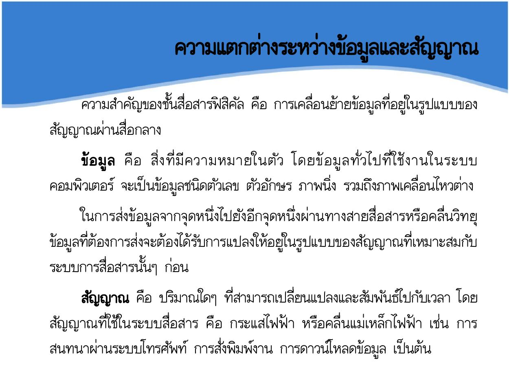
คลิกภาพเพื่อเปิดขยาย
อ่านข้อความต้นฉบับที่สกัดได้ (ไทย/อังกฤษตามไฟล์) ความแตกต่างระหว่างข้อมูลและสัญญาณ
ความสาคัญของชั้นสื่อสารฟิสิคัล คือ การเคลื่อนย้ายข้อมูลที่อยู่ในรูปแบบของ
สัญญาณผ่านสื่อกลาง
ข้ อ มู ล คื อ สิ่ ง ที่ มี ค วามหมายในตั ว โดยข้ อ มู ล ทั่ ว ไปที่ ใ ช้ ง านในระบบ
คอมพิวเตอร์ จะเป็นข้อมูลชนิดตัวเลข ตัวอักษร ภาพนิ่ง รวมถึงภาพเคลื่อนไหวต่าง
ในการส่งข้อมูลจากจุดหนึ่งไปยังอีกจุดหนึ่งผ่านทางสายสื่อสารหรือคลื่นวิทยุ
ข้อมูลที่ต้องการส่งจะต้องได้รับการแปลงให้อยู่ในรูปแบบของสัญญาณที่เหมาะสมกับ
ระบบการสื่อสารนั้นๆ ก่อน
สัญญาณ คือ ปริมาณใดๆ ที่สามารถเปลี่ยนแปลงและสัมพันธ์ไปกับเวลา โดย
สัญญาณที่ใช้ในระบบสื่อสาร คือ กระแสไฟฟ้า หรือคลื่นแม่เหล็กไฟฟ้า เช่น การ
สนทนาผ่านระบบโทรศัพท์ การสั่งพิมพ์งาน การดาวน์โหลดข้อมูล เป็นต้น ทบทวนภาษาไทย: ข้อมูล สัญญาณ และข้อจำกัดของช่องสื่อสาร การส่งข้อมูลดิจิทัลและการแปลงสัญญาณ การส่งแบบแอนะล็อกและ Modulation
กลับสารบัญ ↑ หน้า 3 — สัญญาณแอนะล็อก และสัญญาณดิจติ อล ดูภาพต้นฉบับหน้า 3 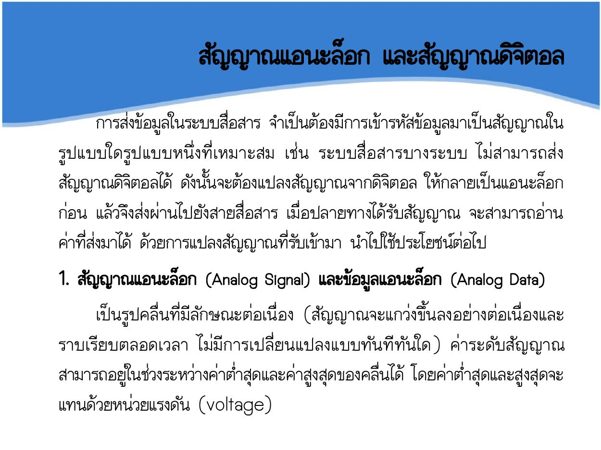
คลิกภาพเพื่อเปิดขยาย
อ่านข้อความต้นฉบับที่สกัดได้ (ไทย/อังกฤษตามไฟล์) สัญญาณแอนะล็อก และสัญญาณดิจติ อล
การส่งข้อมูลในระบบสื่อสาร จาเป็นต้องมีการเข้ารหัสข้อมูลมาเป็นสัญญาณใน
รู ป แบบใดรู ป แบบหนึ่ ง ที่ เ หมาะสม เช่ น ระบบสื่ อสารบางระบบ ไม่ ส ามารถส่ ง
สัญญาณดิจิตอลได้ ดังนั้นจะต้องแปลงสัญญาณจากดิจิตอล ให้กลายเป็นแอนะล็อก
ก่อน แล้วจึงส่งผ่านไปยังสายสื่อสาร เมื่อปลายทางได้รับสัญญาณ จะสามารถอ่าน
ค่าที่ส่งมาได้ ด้วยการแปลงสัญญาณที่รับเข้ามา นาไปใช้ประโยชน์ต่อไป
1. สัญญาณแอนะล็อก (Analog Signal) และข้อมูลแอนะล็อก (Analog Data)
เป็นรูปคลื่นที่มีลักษณะต่อเนื่อง (สัญญาณจะแกว่งขึ้นลงอย่างต่อเนื่องและ
ราบเรีย บตลอดเวลา ไม่ มี การเปลี่ยนแปลงแบบทัน ทีทันใด) ค่า ระดับสั ญ ญาณ
สามารถอยู่ในช่วงระหว่างค่าต่าสุดและค่าสูงสุดของคลื่นได้ โดยค่าต่าสุดและสูงสุดจะ
แทนด้วยหน่วยแรงดัน (voltage) ทบทวนภาษาไทย: ข้อมูล สัญญาณ และข้อจำกัดของช่องสื่อสาร การส่งข้อมูลดิจิทัลและการแปลงสัญญาณ การส่งแบบแอนะล็อกและ Modulation
กลับสารบัญ ↑ หน้า 4 — สัญญาณแอนะล็อก ดูภาพต้นฉบับหน้า 4 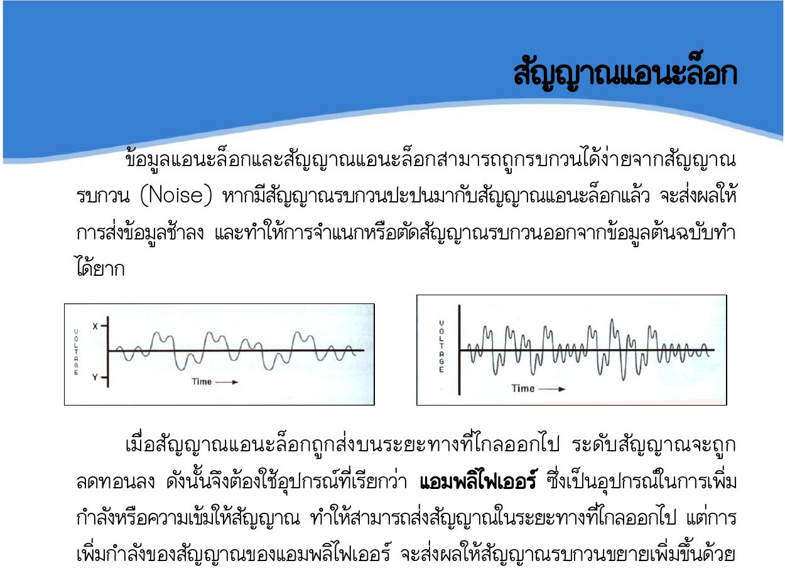
คลิกภาพเพื่อเปิดขยาย
อ่านข้อความต้นฉบับที่สกัดได้ (ไทย/อังกฤษตามไฟล์) สัญญาณแอนะล็อก
ข้อมูลแอนะล็ อกและสัญญาณแอนะล็อกสามารถถูก รบกวนได้ง่า ยจากสัญญาณ
รบกวน (Noise) หากมีสัญญาณรบกวนปะปนมากับสัญญาณแอนะล็อกแล้ว จะส่งผลให้
การส่งข้อมูลช้าลง และทาให้การจาแนกหรือตัดสัญญาณรบกวนออกจากข้อมูลต้นฉบับทา
ได้ยาก
เมื่ อ สั ญ ญาณแอนะล็ อ กถู ก ส่ ง บนระยะทางที่ ไ กลออกไป ระดั บ สั ญ ญาณจะถู ก
ลดทอนลง ดังนั้นจึงต้องใช้อุปกรณ์ที่เรียกว่า แอมพลิไฟเออร์ ซึ่งเป็นอุปกรณ์ในการเพิ่ม
กาลังหรือความเข้มให้สัญญาณ ทาให้สามารถส่งสัญญาณในระยะทางที่ไกลออกไป แต่การ
เพิ่มกาลังของสัญญาณของแอมพลิไฟเออร์ จะส่งผลให้สัญญาณรบกวนขยายเพิ่มขึ้นด้วย ทบทวนภาษาไทย: ข้อมูล สัญญาณ และข้อจำกัดของช่องสื่อสาร การส่งข้อมูลดิจิทัลและการแปลงสัญญาณ การส่งแบบแอนะล็อกและ Modulation
กลับสารบัญ ↑ หน้า 5 — พื้นฐานของสัญญาณแอนะล็อก ดูภาพต้นฉบับหน้า 5 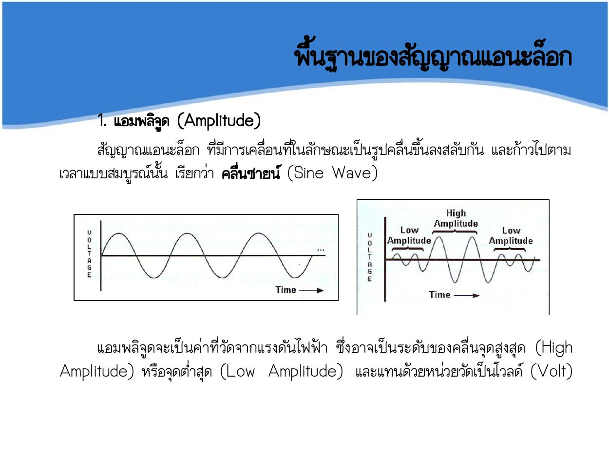
คลิกภาพเพื่อเปิดขยาย
อ่านข้อความต้นฉบับที่สกัดได้ (ไทย/อังกฤษตามไฟล์) พื้นฐานของสัญญาณแอนะล็อก
1. แอมพลิจูด (Amplitude)
สัญญาณแอนะล็อก ที่มีการเคลื่อนที่ในลักษณะเป็นรูปคลื่นขึ้นลงสลับกัน และก้าวไปตาม
เวลาแบบสมบูรณ์นั้น เรียกว่า คลื่นซายน์ (Sine Wave)
แอมพลิจูดจะเป็นค่าที่วัดจากแรงดันไฟฟ้า ซึ่งอาจเป็นระดับ ของคลื่นจุดสูงสุด (High
Amplitude) หรือจุดต่าสุด (Low Amplitude) และแทนด้วยหน่วยวัดเป็นโวลด์ (Volt) ทบทวนภาษาไทย: ข้อมูล สัญญาณ และข้อจำกัดของช่องสื่อสาร การส่งข้อมูลดิจิทัลและการแปลงสัญญาณ การส่งแบบแอนะล็อกและ Modulation
กลับสารบัญ ↑ หน้า 6 — พื้นฐานของสัญญาณแอนะล็อก ดูภาพต้นฉบับหน้า 6 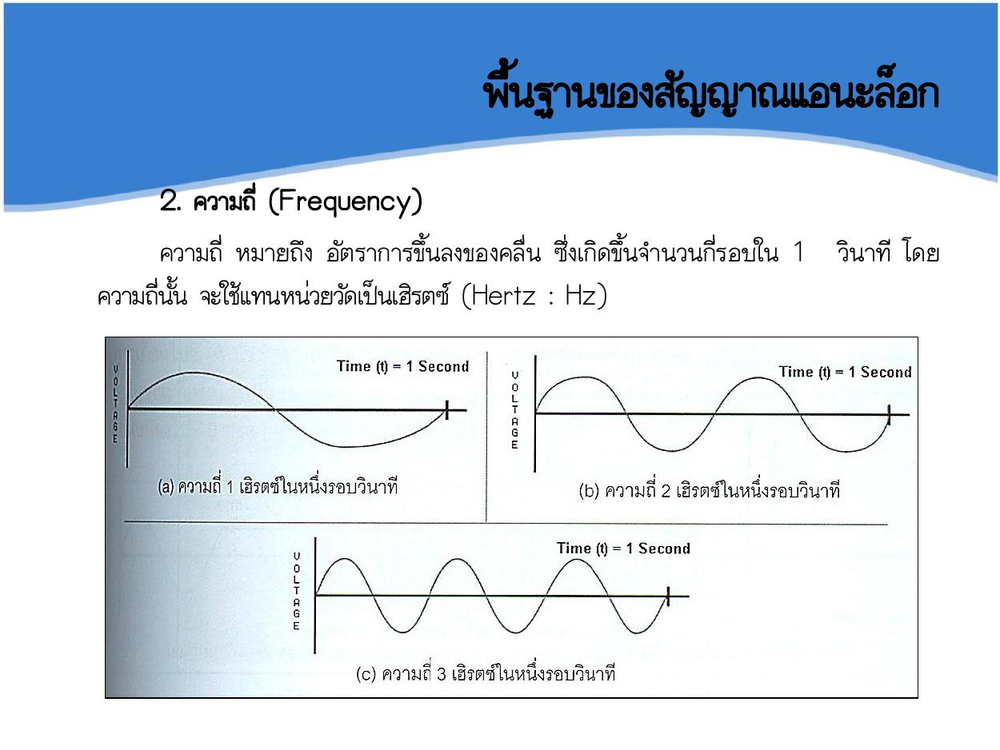
คลิกภาพเพื่อเปิดขยาย
อ่านข้อความต้นฉบับที่สกัดได้ (ไทย/อังกฤษตามไฟล์) พื้นฐานของสัญญาณแอนะล็อก
2. ความถี่ (Frequency)
ความถี่ หมายถึง อัตราการขึ้นลงของคลื่น ซึ่งเกิดขึ้นจานวนกี่รอบใน 1 วินาที โดย
ความถี่นั้น จะใช้แทนหน่วยวัดเป็นเฮิรตซ์ (Hertz : Hz) ทบทวนภาษาไทย: ข้อมูล สัญญาณ และข้อจำกัดของช่องสื่อสาร การส่งข้อมูลดิจิทัลและการแปลงสัญญาณ การส่งแบบแอนะล็อกและ Modulation
กลับสารบัญ ↑ หน้า 7 — พื้นฐานของสัญญาณแอนะล็อก ดูภาพต้นฉบับหน้า 7 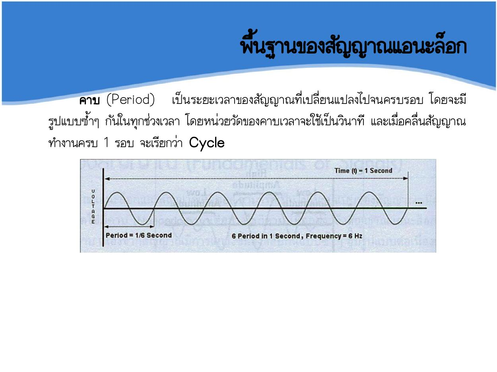
คลิกภาพเพื่อเปิดขยาย
อ่านข้อความต้นฉบับที่สกัดได้ (ไทย/อังกฤษตามไฟล์) พื้นฐานของสัญญาณแอนะล็อก
คาบ (Period) เป็นระยะเวลาของสัญญาณที่เปลี่ยนแปลงไปจนครบรอบ โดยจะมี
รูปแบบซ้าๆ กันในทุกช่วงเวลา โดยหน่วยวัดของคาบเวลาจะใช้เป็นวินาที และเมื่อคลื่นสัญญาณ
ทางานครบ 1 รอบ จะเรียกว่า Cycle ทบทวนภาษาไทย: ข้อมูล สัญญาณ และข้อจำกัดของช่องสื่อสาร การส่งข้อมูลดิจิทัลและการแปลงสัญญาณ การส่งแบบแอนะล็อกและ Modulation
กลับสารบัญ ↑ หน้า 8 — พื้นฐานของสัญญาณแอนะล็อก ดูภาพต้นฉบับหน้า 8 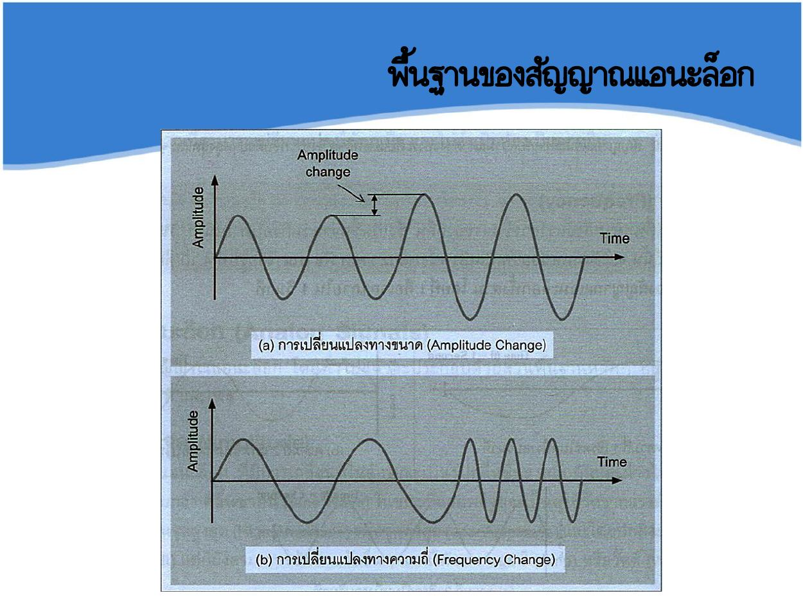
คลิกภาพเพื่อเปิดขยาย
อ่านข้อความต้นฉบับที่สกัดได้ (ไทย/อังกฤษตามไฟล์) พื้นฐานของสัญญาณแอนะล็อก ทบทวนภาษาไทย: ข้อมูล สัญญาณ และข้อจำกัดของช่องสื่อสาร การส่งข้อมูลดิจิทัลและการแปลงสัญญาณ การส่งแบบแอนะล็อกและ Modulation
กลับสารบัญ ↑ หน้า 9 — พื้นฐานของสัญญาณแอนะล็อก ดูภาพต้นฉบับหน้า 9 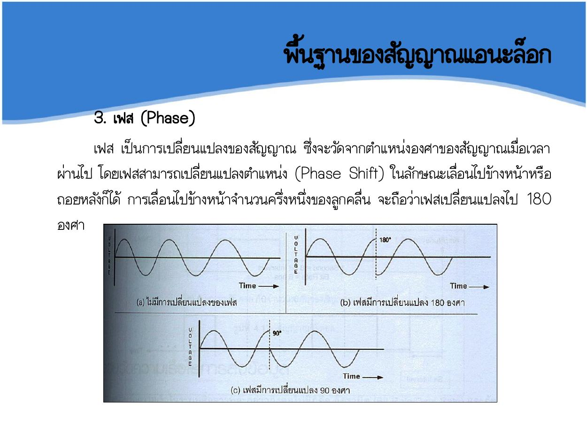
คลิกภาพเพื่อเปิดขยาย
อ่านข้อความต้นฉบับที่สกัดได้ (ไทย/อังกฤษตามไฟล์) พื้นฐานของสัญญาณแอนะล็อก
3. เฟส (Phase)
เฟส เป็นการเปลี่ยนแปลงของสัญญาณ ซึ่งจะวัดจากตาแหน่งองศาของสัญญาณเมื่อเวลา
ผ่านไป โดยเฟสสามารถเปลี่ยนแปลงตาแหน่ง (Phase Shift) ในลักษณะเลื่อนไปข้างหน้าหรือ
ถอยหลังก็ได้ การเลื่อนไปข้างหน้าจานวนครึ่งหนึ่งของลูกคลื่น จะถือว่าเฟสเปลี่ยนแปลงไป 180
องศา ทบทวนภาษาไทย: ข้อมูล สัญญาณ และข้อจำกัดของช่องสื่อสาร การส่งข้อมูลดิจิทัลและการแปลงสัญญาณ การส่งแบบแอนะล็อกและ Modulation
กลับสารบัญ ↑ หน้า 10 — สัญญาณดิจิตอล ดูภาพต้นฉบับหน้า 10 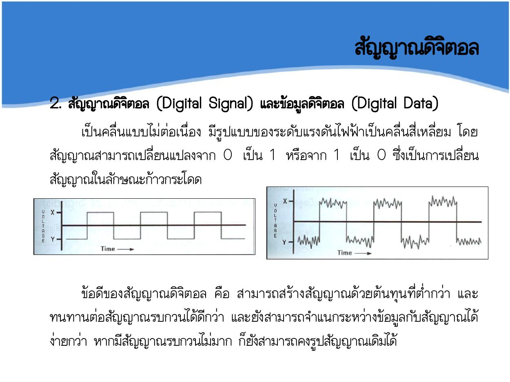
คลิกภาพเพื่อเปิดขยาย
อ่านข้อความต้นฉบับที่สกัดได้ (ไทย/อังกฤษตามไฟล์) สัญญาณดิจิตอล
2. สัญญาณดิจิตอล (Digital Signal) และข้อมูลดิจิตอล (Digital Data)
เป็นคลื่นแบบไม่ต่อเนื่อง มีรูปแบบของระดับแรงดันไฟฟ้าเป็นคลื่นสี่เหลี่ยม โดย
สัญญาณสามารถเปลี่ยนแปลงจาก 0 เป็น 1 หรือจาก 1 เป็น 0 ซึ่งเป็นการเปลี่ยน
สัญญาณในลักษณะก้าวกระโดด
ข้อดีของสัญญาณดิจิตอล คือ สามารถสร้างสัญญาณด้วยต้นทุนที่ต่ากว่า และ
ทนทานต่อสัญญาณรบกวนได้ดีกว่า และยังสามารถจาแนกระหว่างข้อมูลกับสัญญาณได้
ง่ายกว่า หากมีสัญญาณรบกวนไม่มาก ก็ยังสามารถคงรูปสัญญาณเดิมได้ ทบทวนภาษาไทย: ข้อมูล สัญญาณ และข้อจำกัดของช่องสื่อสาร การส่งข้อมูลดิจิทัลและการแปลงสัญญาณ การส่งแบบแอนะล็อกและ Modulation
กลับสารบัญ ↑ หน้า 11 — สัญญาณดิจิตอล ดูภาพต้นฉบับหน้า 11 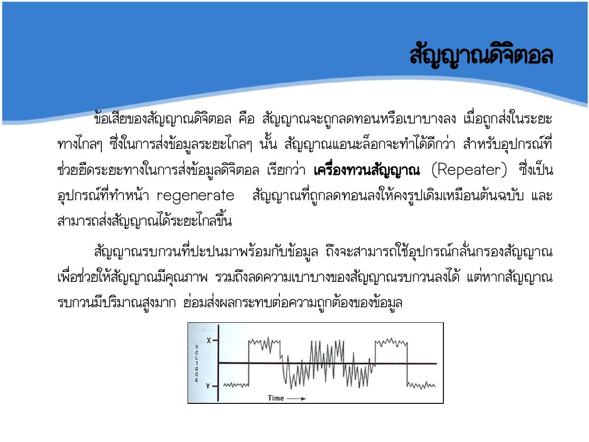
คลิกภาพเพื่อเปิดขยาย
อ่านข้อความต้นฉบับที่สกัดได้ (ไทย/อังกฤษตามไฟล์) สัญญาณดิจิตอล
ข้อเสียของสัญญาณดิจิตอล คือ สัญญาณจะถูกลดทอนหรือเบาบางลง เมื่อถูกส่งในระยะ
ทางไกลๆ ซึ่งในการส่งข้อมูลระยะไกลๆ นั้น สัญญาณแอนะล็อกจะทาได้ดีกว่า สาหรับอุปกรณ์ที่
ช่วยยืดระยะทางในการส่งข้อมูลดิจิตอล เรียกว่า เครื่องทวนสัญญาณ (Repeater) ซึ่งเป็น
อุปกรณ์ที่ทาหน้า regenerate สัญญาณที่ถูกลดทอนลงให้คงรูปเดิมเหมือนต้นฉบับ และ
สามารถส่งสัญญาณได้ระยะไกลขึ้น
สัญญาณรบกวนที่ปะปนมาพร้อมกับข้อมูล ถึงจะสามารถใช้อุปกรณ์กลั่นกรองสัญญาณ
เพื่อช่วยให้สัญญาณมีคุณภาพ รวมถึงลดความเบาบางของสัญญาณรบกวนลงได้ แต่หากสัญญาณ
รบกวนมีปริมาณสูงมาก ย่อมส่งผลกระทบต่อความถูกต้องของข้อมูล ทบทวนภาษาไทย: ข้อมูล สัญญาณ และข้อจำกัดของช่องสื่อสาร การส่งข้อมูลดิจิทัลและการแปลงสัญญาณ การส่งแบบแอนะล็อกและ Modulation
กลับสารบัญ ↑ หน้า 12 — สัญญาณดิจิตอล ดูภาพต้นฉบับหน้า 12 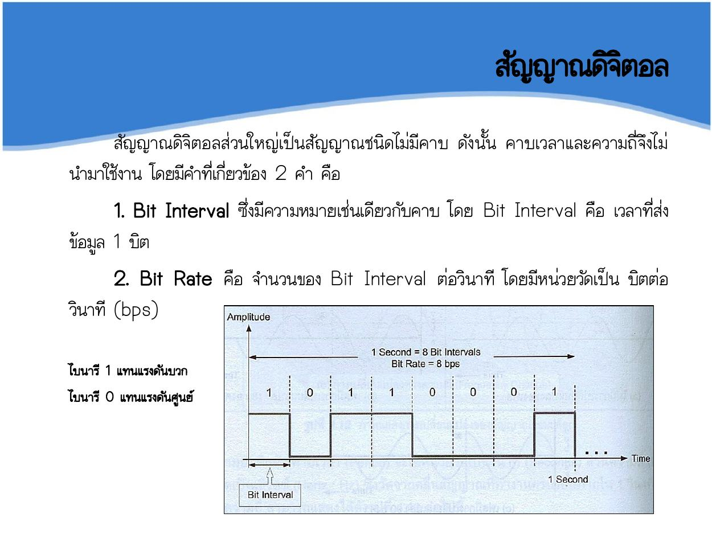
คลิกภาพเพื่อเปิดขยาย
อ่านข้อความต้นฉบับที่สกัดได้ (ไทย/อังกฤษตามไฟล์) สัญญาณดิจิตอล
สัญญาณดิจิตอลส่วนใหญ่เป็นสัญญาณชนิดไม่มีคาบ ดังนั้น คาบเวลาและความถี่จึงไม่
นามาใช้งาน โดยมีคาที่เกี่ยวข้อง 2 คา คือ
1. Bit Interval ซึ่งมีความหมายเช่นเดียวกับคาบ โดย Bit Interval คือ เวลาที่ส่ง
ข้อมูล 1 บิต
2. Bit Rate คือ จานวนของ Bit Interval ต่อวินาที โดยมีหน่วยวัดเป็น บิตต่อ
วินาที (bps)
ไบนารี 1 แทนแรงดันบวก
ไบนารี 0 แทนแรงดันศูนย์ ทบทวนภาษาไทย: ข้อมูล สัญญาณ และข้อจำกัดของช่องสื่อสาร การส่งข้อมูลดิจิทัลและการแปลงสัญญาณ การส่งแบบแอนะล็อกและ Modulation
กลับสารบัญ ↑ หน้า 13 — สัญญาณดิจิตอล ดูภาพต้นฉบับหน้า 13 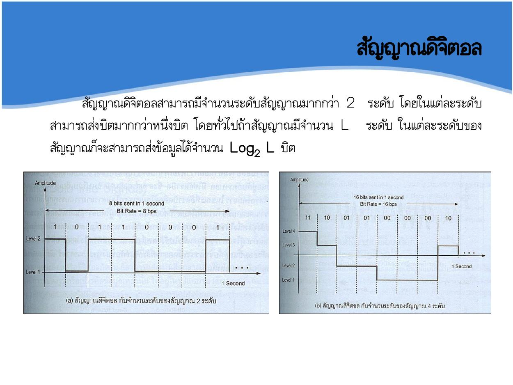
คลิกภาพเพื่อเปิดขยาย
อ่านข้อความต้นฉบับที่สกัดได้ (ไทย/อังกฤษตามไฟล์) สัญญาณดิจิตอล
สัญญาณดิจิตอลสามารถมีจานวนระดับสัญญาณมากกว่า 2 ระดับ โดยในแต่ละระดับ
สามารถส่งบิตมากกว่าหนึ่งบิต โดยทั่วไปถ้าสัญญาณมีจานวน L ระดับ ในแต่ละระดับของ
สัญญาณก็จะสามารถส่งข้อมูลได้จานวน Log2 L บิต ทบทวนภาษาไทย: ข้อมูล สัญญาณ และข้อจำกัดของช่องสื่อสาร การส่งข้อมูลดิจิทัลและการแปลงสัญญาณ การส่งแบบแอนะล็อกและ Modulation
กลับสารบัญ ↑ หน้า 14 — หน่วยวัดความเร็วในการส่งข้อมูล ดูภาพต้นฉบับหน้า 14 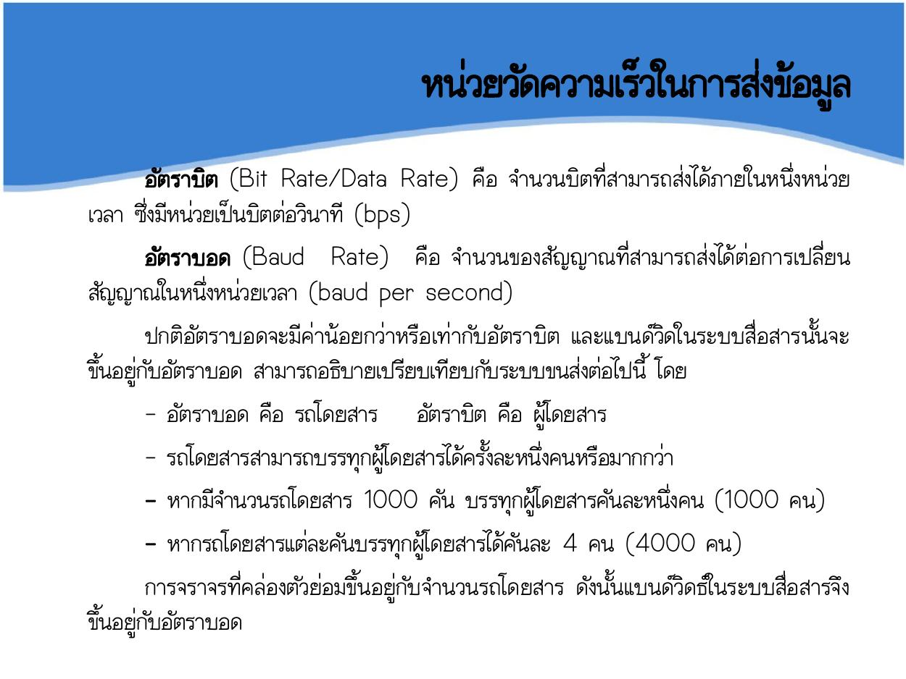
คลิกภาพเพื่อเปิดขยาย
อ่านข้อความต้นฉบับที่สกัดได้ (ไทย/อังกฤษตามไฟล์) หน่วยวัดความเร็วในการส่งข้อมูล
อัตราบิต (Bit Rate/Data Rate) คือ จานวนบิตที่สามารถส่งได้ภายในหนึ่งหน่วย
เวลา ซึ่งมีหน่วยเป็นบิตต่อวินาที (bps)
อัตราบอด (Baud Rate) คือ จานวนของสัญญาณที่สามารถส่งได้ต่อการเปลี่ยน
สัญญาณในหนึ่งหน่วยเวลา (baud per second)
ปกติอัตราบอดจะมีค่าน้อยกว่าหรือเท่ากับอัตราบิต และแบนด์วิดในระบบสื่อสารนั้นจะ
ขึ้นอยู่กับอัตราบอด สามารถอธิบายเปรียบเทียบกับระบบขนส่งต่อไปนี้ โดย
- อัตราบอด คือ รถโดยสาร อัตราบิต คือ ผู้โดยสาร
- รถโดยสารสามารถบรรทุกผู้โดยสารได้ครั้งละหนึ่งคนหรือมากกว่า
- หากมีจานวนรถโดยสาร 1000 คัน บรรทุกผู้โดยสารคันละหนึ่งคน (1000 คน)
- หากรถโดยสารแต่ละคันบรรทุกผู้โดยสารได้คันละ 4 คน (4000 คน)
การจราจรที่คล่องตัวย่อมขึ้นอยู่กับจานวนรถโดยสาร ดังนั้นแบนด์วิดธ์ในระบบสื่อสารจึง
ขึ้นอยู่กับอัตราบอด ทบทวนภาษาไทย: ข้อมูล สัญญาณ และข้อจำกัดของช่องสื่อสาร การส่งข้อมูลดิจิทัลและการแปลงสัญญาณ การส่งแบบแอนะล็อกและ Modulation
กลับสารบัญ ↑ หน้า 15 — หน่วยวัดความเร็วในการส่งข้อมูล ดูภาพต้นฉบับหน้า 15 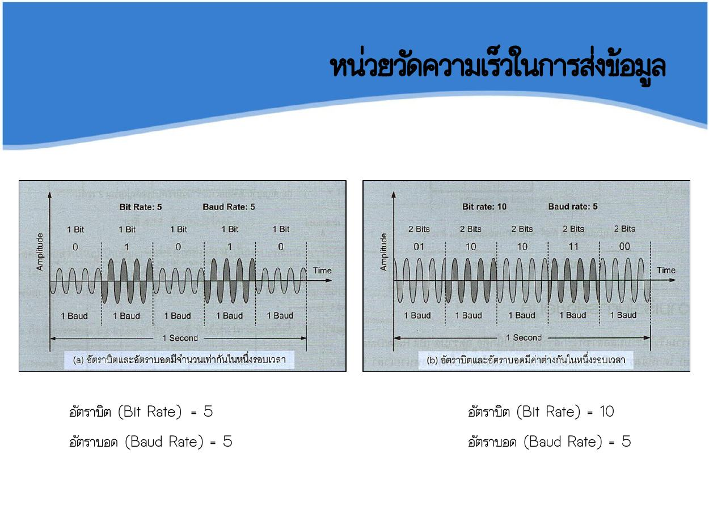
คลิกภาพเพื่อเปิดขยาย
อ่านข้อความต้นฉบับที่สกัดได้ (ไทย/อังกฤษตามไฟล์) หน่วยวัดความเร็วในการส่งข้อมูล
อัตราบิต (Bit Rate) = 5 อัตราบิต (Bit Rate) = 10
อัตราบอด (Baud Rate) = 5 อัตราบอด (Baud Rate) = 5 ทบทวนภาษาไทย: ข้อมูล สัญญาณ และข้อจำกัดของช่องสื่อสาร การส่งข้อมูลดิจิทัลและการแปลงสัญญาณ การส่งแบบแอนะล็อกและ Modulation
กลับสารบัญ ↑ หน้า 16 — การแปลงข้อมูลให้เป็นสัญญาณ ดูภาพต้นฉบับหน้า 16 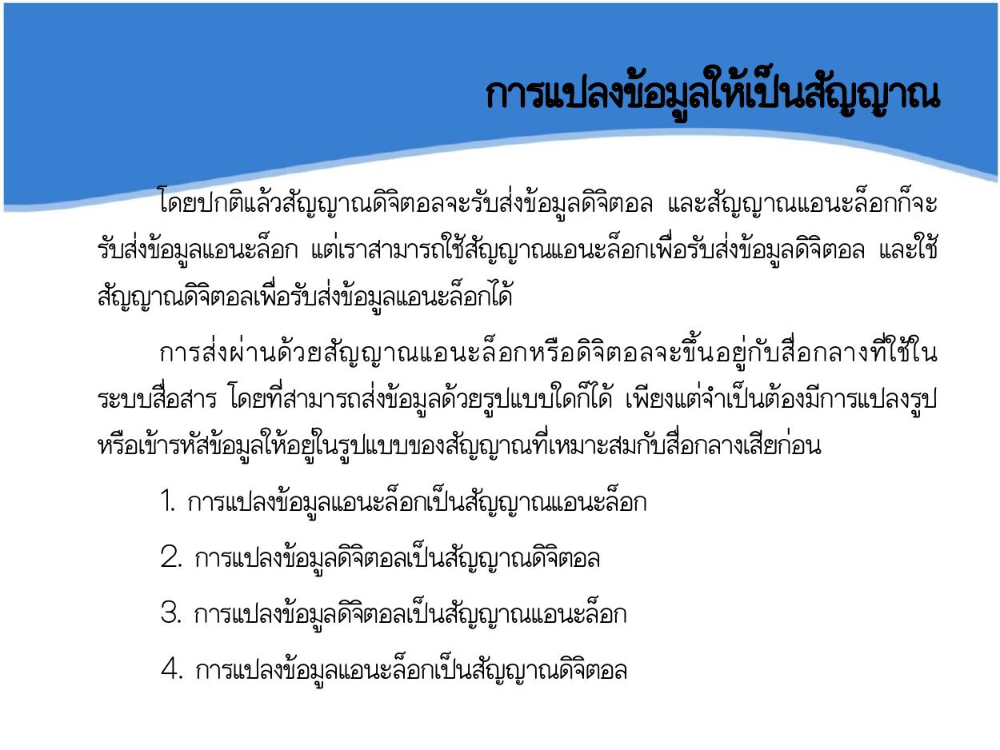
คลิกภาพเพื่อเปิดขยาย
อ่านข้อความต้นฉบับที่สกัดได้ (ไทย/อังกฤษตามไฟล์) การแปลงข้อมูลให้เป็นสัญญาณ
โดยปกติแล้วสัญญาณดิจิตอลจะรับส่งข้อมูลดิจิตอล และสัญญาณแอนะล็อกก็จะ
รับส่งข้อมูลแอนะล็อก แต่เราสามารถใช้สัญญาณแอนะล็อกเพื่อรับส่งข้อมูลดิจิตอล และใช้
สัญญาณดิจิตอลเพื่อรับส่งข้อมูลแอนะล็อกได้
การส่ ง ผ่ า นด้ ว ยสั ญ ญาณแอนะล็ อ กหรื อ ดิ จิ ต อลจะขึ้ น อยู่ กั บ สื่ อ กลางที่ ใ ช้ ใ น
ระบบสื่อสาร โดยที่สามารถส่งข้อมูลด้วยรูปแบบใดก็ได้ เพียงแต่จาเป็นต้องมีการแปลงรูป
หรือเข้ารหัสข้อมูลให้อยู่ในรูปแบบของสัญญาณที่เหมาะสมกับสื่อกลางเสียก่อน
1. การแปลงข้อมูลแอนะล็อกเป็นสัญญาณแอนะล็อก
2. การแปลงข้อมูลดิจิตอลเป็นสัญญาณดิจิตอล
3. การแปลงข้อมูลดิจิตอลเป็นสัญญาณแอนะล็อก
4. การแปลงข้อมูลแอนะล็อกเป็นสัญญาณดิจิตอล ทบทวนภาษาไทย: ข้อมูล สัญญาณ และข้อจำกัดของช่องสื่อสาร การส่งข้อมูลดิจิทัลและการแปลงสัญญาณ การส่งแบบแอนะล็อกและ Modulation
กลับสารบัญ ↑ หน้า 17 — การแปลงข้อมูลแอนะล็อกเป็นสัญญาณแอนะล็อก ดูภาพต้นฉบับหน้า 17 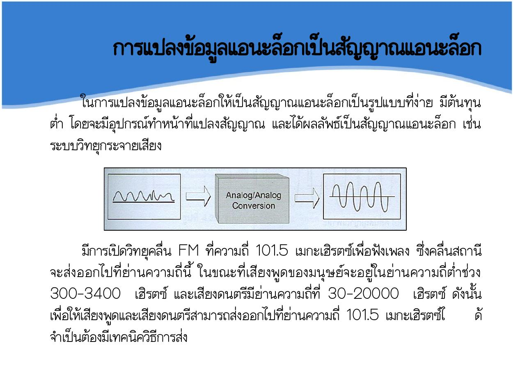
คลิกภาพเพื่อเปิดขยาย
อ่านข้อความต้นฉบับที่สกัดได้ (ไทย/อังกฤษตามไฟล์) การแปลงข้อมูลแอนะล็อกเป็นสัญญาณแอนะล็อก
ในการแปลงข้อมูลแอนะล็อกให้เป็นสัญญาณแอนะล็อกเป็นรูปแบบที่ง่าย มีต้นทุน
ต่า โดยจะมีอุปกรณ์ทาหน้าที่แปลงสัญญาณ และได้ผลลัพธ์เป็นสัญญาณแอนะล็อก เช่น
ระบบวิทยุกระจายเสียง
มีการเปิดวิทยุคลื่น FM ที่ความถี่ 101.5 เมกะเฮิรตซ์เพื่อฟังเพลง ซึ่งคลื่นสถานี
จะส่ง ออกไปที่ ย่า นความถี่ นี้ ในขณะที่ เ สีย งพู ด ของมนุ ษย์จ ะอยู่ ในย่ านความถี่ ต่าช่ ว ง
300-3400 เฮิรตซ์ และเสียงดนตรีมีย่านความถี่ที่ 30-20000 เฮิรตซ์ ดังนั้น
เพื่อให้เสียงพูดและเสียงดนตรีสามารถส่งออกไปที่ย่านความถี่ 101.5 เมกะเฮิรตซ์ไ ด้
จาเป็นต้องมีเทคนิควิธีการส่ง ทบทวนภาษาไทย: ข้อมูล สัญญาณ และข้อจำกัดของช่องสื่อสาร การส่งข้อมูลดิจิทัลและการแปลงสัญญาณ การส่งแบบแอนะล็อกและ Modulation
กลับสารบัญ ↑ หน้า 18 — การแปลงข้อมูลแอนะล็อกเป็นสัญญาณแอนะล็อก ดูภาพต้นฉบับหน้า 18 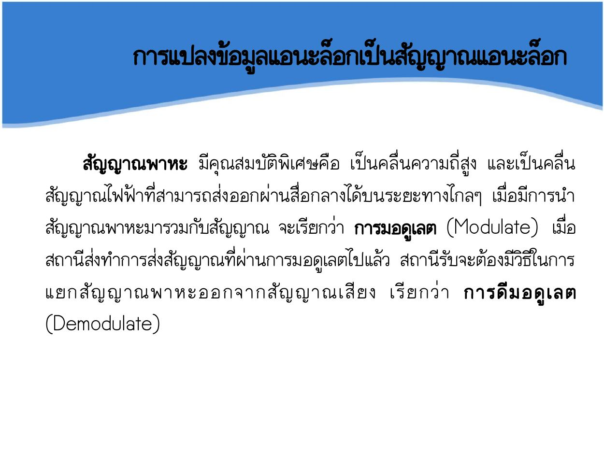
คลิกภาพเพื่อเปิดขยาย
อ่านข้อความต้นฉบับที่สกัดได้ (ไทย/อังกฤษตามไฟล์) การแปลงข้อมูลแอนะล็อกเป็นสัญญาณแอนะล็อก
สัญ ญาณพาหะ มีคุณสมบัติ พิเศษคือ เป็นคลื่นความถี่ สูง และเป็นคลื่น
สัญญาณไฟฟ้าที่สามารถส่งออกผ่านสื่อกลางได้บนระยะทางไกลๆ เมื่อมีการนา
สัญญาณพาหะมารวมกับสัญญาณ จะเรียกว่า การมอดูเลต (Modulate) เมื่อ
สถานีส่งทาการส่งสัญญาณที่ผ่านการมอดูเลตไปแล้ว สถานีรับจะต้องมีวิธีในการ
แยกสั ญ ญาณพาหะออกจากสั ญ ญาณเสี ย ง เรี ย กว่ า การดี ม อดู เ ลต
(Demodulate) ทบทวนภาษาไทย: ข้อมูล สัญญาณ และข้อจำกัดของช่องสื่อสาร การส่งข้อมูลดิจิทัลและการแปลงสัญญาณ การส่งแบบแอนะล็อกและ Modulation
กลับสารบัญ ↑ หน้า 19 — การแปลงข้อมูลแอนะล็อกเป็นสัญญาณแอนะล็อก ดูภาพต้นฉบับหน้า 19 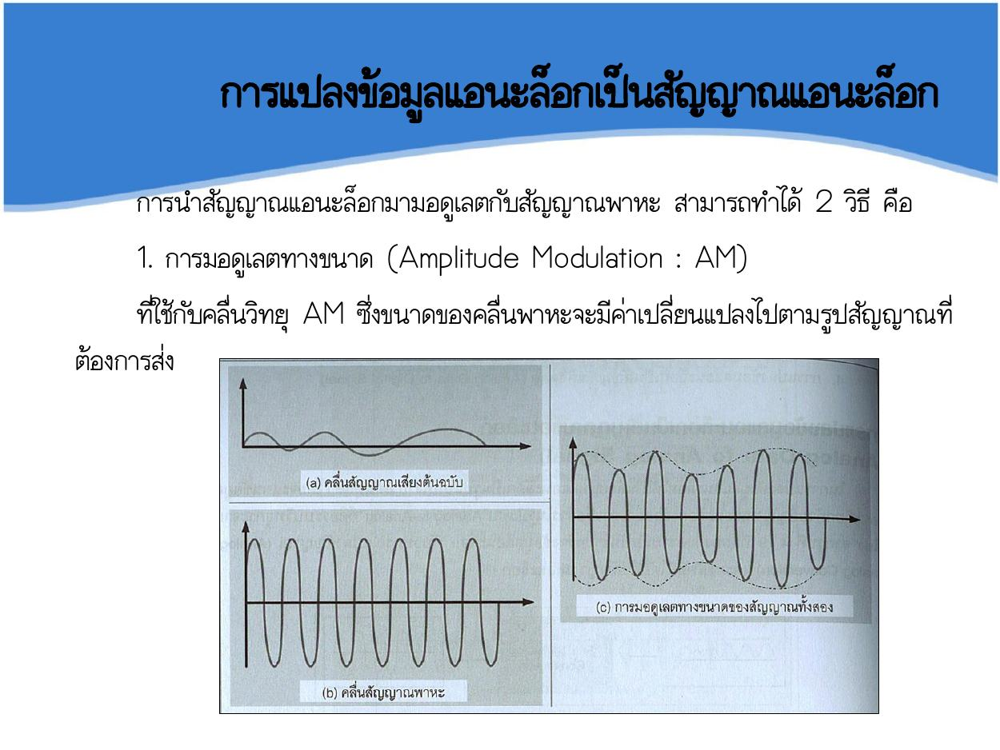
คลิกภาพเพื่อเปิดขยาย
อ่านข้อความต้นฉบับที่สกัดได้ (ไทย/อังกฤษตามไฟล์) การแปลงข้อมูลแอนะล็อกเป็นสัญญาณแอนะล็อก
การนาสัญญาณแอนะล็อกมามอดูเลตกับสัญญาณพาหะ สามารถทาได้ 2 วิธี คือ
1. การมอดูเลตทางขนาด (Amplitude Modulation : AM)
ที่ใช้กับคลื่นวิทยุ AM ซึ่งขนาดของคลื่นพาหะจะมีค่าเปลี่ยนแปลงไปตามรูปสัญญาณที่
ต้องการส่ง ทบทวนภาษาไทย: ข้อมูล สัญญาณ และข้อจำกัดของช่องสื่อสาร การส่งข้อมูลดิจิทัลและการแปลงสัญญาณ การส่งแบบแอนะล็อกและ Modulation
กลับสารบัญ ↑ หน้า 20 — การแปลงข้อมูลแอนะล็อกเป็นสัญญาณแอนะล็อก ดูภาพต้นฉบับหน้า 20 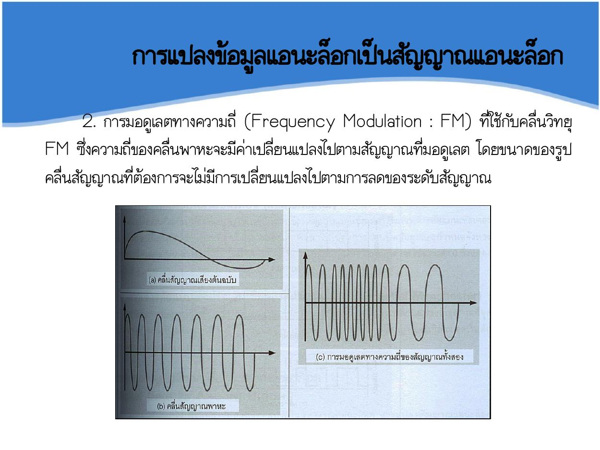
คลิกภาพเพื่อเปิดขยาย
อ่านข้อความต้นฉบับที่สกัดได้ (ไทย/อังกฤษตามไฟล์) การแปลงข้อมูลแอนะล็อกเป็นสัญญาณแอนะล็อก
2. การมอดูเลตทางความถี่ (Frequency Modulation : FM) ที่ใช้กับคลื่นวิทยุ
FM ซึ่งความถี่ของคลื่นพาหะจะมีค่าเปลี่ยนแปลงไปตามสัญญาณที่มอดูเลต โดยขนาดของรูป
คลื่นสัญญาณที่ต้องการจะไม่มีการเปลี่ยนแปลงไปตามการลดของระดับสัญญาณ ทบทวนภาษาไทย: ข้อมูล สัญญาณ และข้อจำกัดของช่องสื่อสาร การส่งข้อมูลดิจิทัลและการแปลงสัญญาณ การส่งแบบแอนะล็อกและ Modulation
กลับสารบัญ ↑ หน้า 21 — การแปลงข้อมูลดิจิตอลเป็นสัญญาณดิจิตอล ดูภาพต้นฉบับหน้า 21 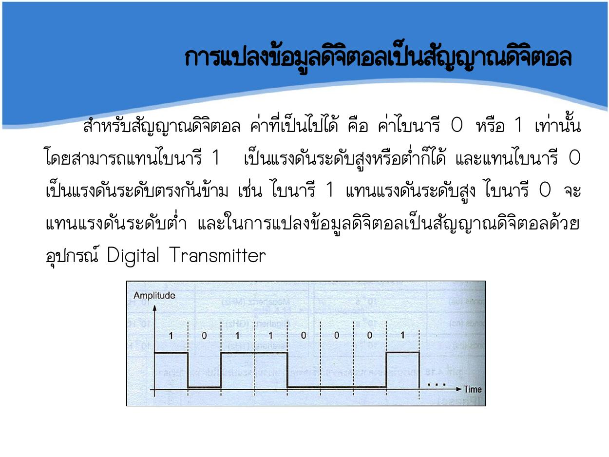
คลิกภาพเพื่อเปิดขยาย
อ่านข้อความต้นฉบับที่สกัดได้ (ไทย/อังกฤษตามไฟล์) การแปลงข้อมูลดิจิตอลเป็นสัญญาณดิจิตอล
สาหรับสัญญาณดิจิตอล ค่าที่เป็นไปได้ คือ ค่าไบนารี 0 หรือ 1 เท่านั้น
โดยสามารถแทนไบนารี 1 เป็นแรงดันระดับสูงหรือต่าก็ได้ และแทนไบนารี 0
เป็นแรงดันระดับตรงกันข้าม เช่น ไบนารี 1 แทนแรงดันระดับสูง ไบนารี 0 จะ
แทนแรงดัน ระดั บ ต่ า และในการแปลงข้อ มูล ดิจิต อลเป็น สัญ ญาณดิจิ ต อลด้ว ย
อุปกรณ์ Digital Transmitter ทบทวนภาษาไทย: ข้อมูล สัญญาณ และข้อจำกัดของช่องสื่อสาร การส่งข้อมูลดิจิทัลและการแปลงสัญญาณ การส่งแบบแอนะล็อกและ Modulation
กลับสารบัญ ↑ หน้า 22 — การแปลงข้อมูลดิจิตอลเป็นสัญญาณดิจิตอล ดูภาพต้นฉบับหน้า 22 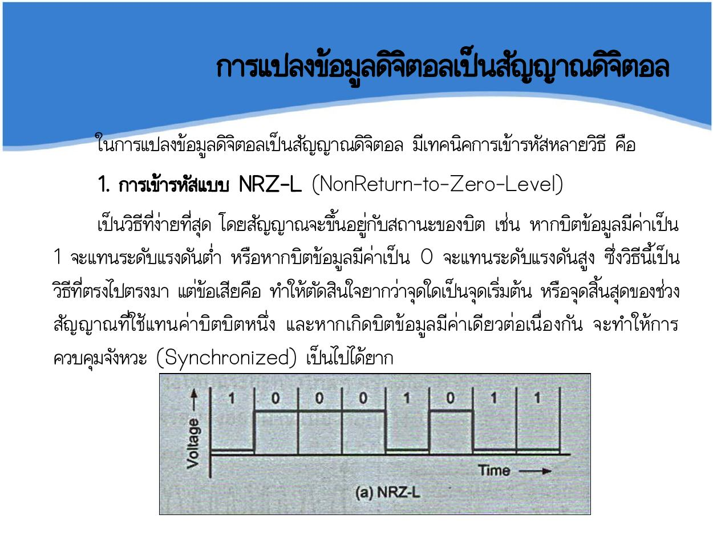
คลิกภาพเพื่อเปิดขยาย
อ่านข้อความต้นฉบับที่สกัดได้ (ไทย/อังกฤษตามไฟล์) การแปลงข้อมูลดิจิตอลเป็นสัญญาณดิจิตอล
ในการแปลงข้อมูลดิจิตอลเป็นสัญญาณดิจิตอล มีเทคนิคการเข้ารหัสหลายวิธี คือ
1. การเข้ารหัสแบบ NRZ-L (NonReturn-to-Zero-Level)
เป็นวิธีที่ง่ายที่สุด โดยสัญญาณจะขึ้นอยู่กับสถานะของบิต เช่น หากบิตข้อมูลมีค่าเป็น
1 จะแทนระดับแรงดันต่า หรือหากบิตข้อมูลมีค่าเป็น 0 จะแทนระดับแรงดันสูง ซึ่งวิธีนี้เป็น
วิธีที่ตรงไปตรงมา แต่ข้อเสียคือ ทาให้ตัดสินใจยากว่าจุดใดเป็นจุดเริ่มต้น หรือจุดสิ้นสุดของช่วง
สัญญาณที่ใช้แทนค่าบิตบิตหนึ่ง และหากเกิดบิตข้อมูลมีค่าเดียวต่อเนื่องกัน จะทาให้การ
ควบคุมจังหวะ (Synchronized) เป็นไปได้ยาก ทบทวนภาษาไทย: ข้อมูล สัญญาณ และข้อจำกัดของช่องสื่อสาร การส่งข้อมูลดิจิทัลและการแปลงสัญญาณ การส่งแบบแอนะล็อกและ Modulation
กลับสารบัญ ↑ หน้า 23 — การแปลงข้อมูลดิจิตอลเป็นสัญญาณดิจิตอล ดูภาพต้นฉบับหน้า 23 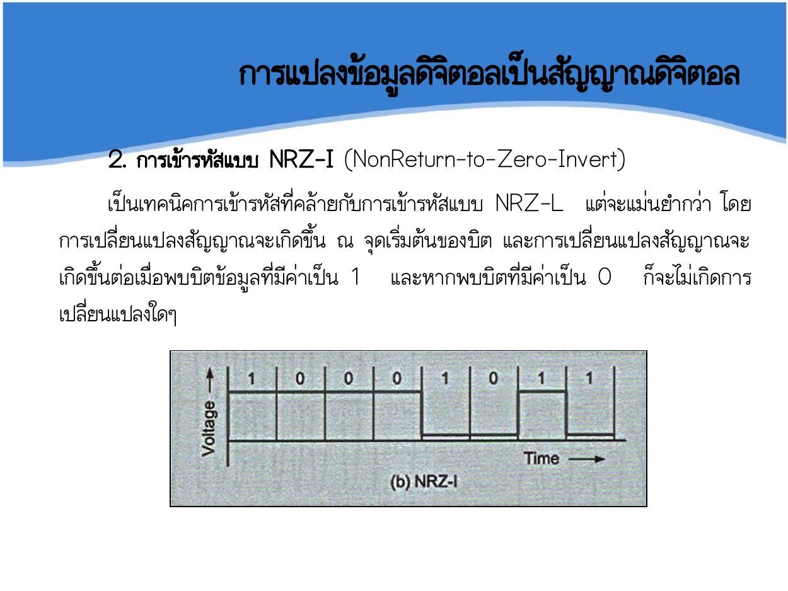
คลิกภาพเพื่อเปิดขยาย
อ่านข้อความต้นฉบับที่สกัดได้ (ไทย/อังกฤษตามไฟล์) การแปลงข้อมูลดิจิตอลเป็นสัญญาณดิจิตอล
2. การเข้ารหัสแบบ NRZ-I (NonReturn-to-Zero-Invert)
เป็นเทคนิคการเข้ารหัสที่คล้ายกับการเข้ารหัสแบบ NRZ-L แต่จะแม่นยากว่า โดย
การเปลี่ยนแปลงสัญญาณจะเกิดขึ้น ณ จุดเริ่มต้นของบิต และการเปลี่ยนแปลงสัญญาณจะ
เกิดขึ้นต่อเมื่อพบบิตข้อมูลที่มีค่าเป็น 1 และหากพบบิตที่มีค่าเป็น 0 ก็จะไม่เกิดการ
เปลี่ยนแปลงใดๆ ทบทวนภาษาไทย: ข้อมูล สัญญาณ และข้อจำกัดของช่องสื่อสาร การส่งข้อมูลดิจิทัลและการแปลงสัญญาณ การส่งแบบแอนะล็อกและ Modulation
กลับสารบัญ ↑ หน้า 24 — การแปลงข้อมูลดิจิตอลเป็นสัญญาณดิจิตอล ดูภาพต้นฉบับหน้า 24 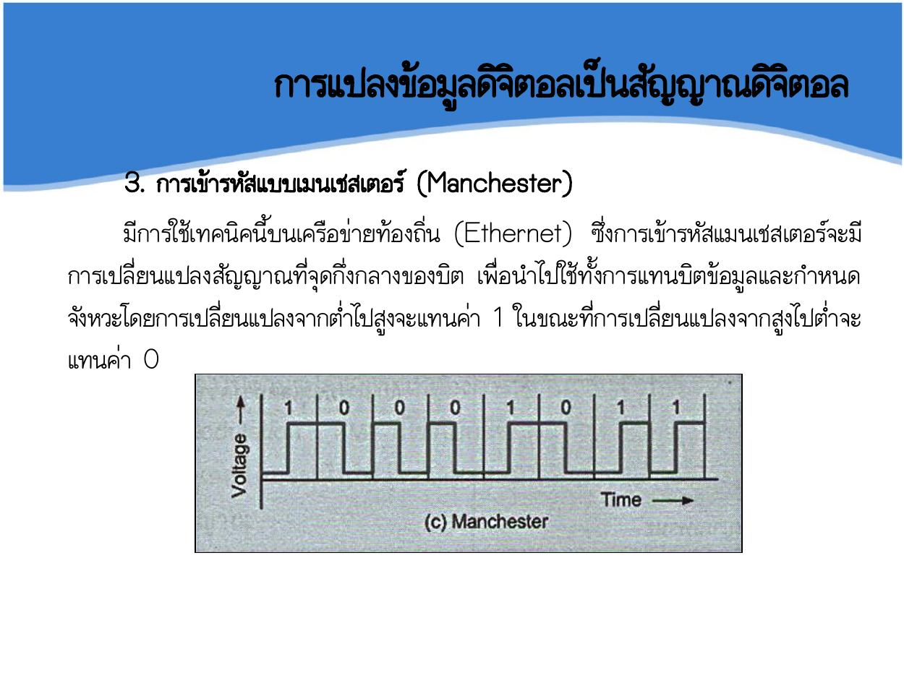
คลิกภาพเพื่อเปิดขยาย
อ่านข้อความต้นฉบับที่สกัดได้ (ไทย/อังกฤษตามไฟล์) การแปลงข้อมูลดิจิตอลเป็นสัญญาณดิจิตอล
3. การเข้ารหัสแบบเมนเชสเตอร์ (Manchester)
มีการใช้เทคนิคนี้บนเครือข่ายท้องถิ่น (Ethernet) ซึ่งการเข้ารหัสแมนเชสเตอร์จะมี
การเปลี่ยนแปลงสัญญาณที่จุดกึ่งกลางของบิต เพื่อนาไปใช้ทั้งการแทนบิตข้อมูลและกาหนด
จังหวะโดยการเปลี่ยนแปลงจากต่าไปสูงจะแทนค่า 1 ในขณะที่การเปลี่ยนแปลงจากสูงไปต่าจะ
แทนค่า 0 ทบทวนภาษาไทย: ข้อมูล สัญญาณ และข้อจำกัดของช่องสื่อสาร การส่งข้อมูลดิจิทัลและการแปลงสัญญาณ การส่งแบบแอนะล็อกและ Modulation
กลับสารบัญ ↑ หน้า 25 — การแปลงข้อมูลดิจิตอลเป็นสัญญาณดิจิตอล ดูภาพต้นฉบับหน้า 25 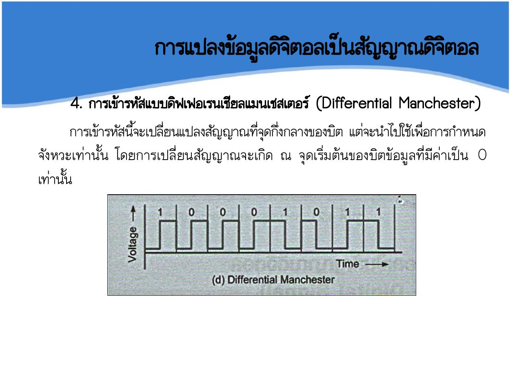
คลิกภาพเพื่อเปิดขยาย
อ่านข้อความต้นฉบับที่สกัดได้ (ไทย/อังกฤษตามไฟล์) การแปลงข้อมูลดิจิตอลเป็นสัญญาณดิจิตอล
4. การเข้ารหัสแบบดิฟเฟอเรนเชียลแมนเชสเตอร์ (Differential Manchester)
การเข้ารหัสนี้จะเปลี่ยนแปลงสัญญาณที่จุดกึ่งกลางของบิต แต่จะนาไปใช้เพื่อการกาหนด
จัง หวะเท่า นั้น โดยการเปลี่ ยนสัญ ญาณจะเกิด ณ จุ ดเริ่ม ต้น ของบิ ตข้ อมู ลที่ มีค่าเป็น 0
เท่านั้น ทบทวนภาษาไทย: ข้อมูล สัญญาณ และข้อจำกัดของช่องสื่อสาร การส่งข้อมูลดิจิทัลและการแปลงสัญญาณ การส่งแบบแอนะล็อกและ Modulation
กลับสารบัญ ↑ หน้า 26 — การแปลงข้อมูลดิจิตอลเป็นสัญญาณแอนะล็อก ดูภาพต้นฉบับหน้า 26 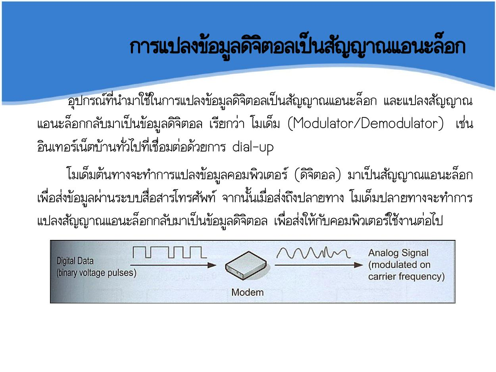
คลิกภาพเพื่อเปิดขยาย
อ่านข้อความต้นฉบับที่สกัดได้ (ไทย/อังกฤษตามไฟล์) การแปลงข้อมูลดิจิตอลเป็นสัญญาณแอนะล็อก
อุปกรณ์ที่นามาใช้ในการแปลงข้อมูลดิจิตอลเป็นสัญญาณแอนะล็อก และแปลงสัญญาณ
แอนะล็อกกลับมาเป็นข้อมูลดิจิตอล เรียกว่า โมเด็ม (Modulator/Demodulator) เช่น
อินเทอร์เน็ตบ้านทั่วไปที่เชื่อมต่อด้วยการ dial-up
โมเด็มต้นทางจะทาการแปลงข้อมูลคอมพิวเตอร์ (ดิจิตอล) มาเป็นสัญญาณแอนะล็อก
เพื่อส่งข้อมูลผ่านระบบสื่อสารโทรศัพท์ จากนั้นเมื่อส่งถึงปลายทาง โมเด็มปลายทางจะทาการ
แปลงสัญญาณแอนะล็อกกลับมาเป็นข้อมูลดิจิตอล เพื่อส่งให้กับคอมพิวเตอร์ใช้งานต่อไป ทบทวนภาษาไทย: ข้อมูล สัญญาณ และข้อจำกัดของช่องสื่อสาร การส่งข้อมูลดิจิทัลและการแปลงสัญญาณ การส่งแบบแอนะล็อกและ Modulation
กลับสารบัญ ↑ หน้า 27 — การแปลงข้อมูลดิจิตอลเป็นสัญญาณแอนะล็อก ดูภาพต้นฉบับหน้า 27 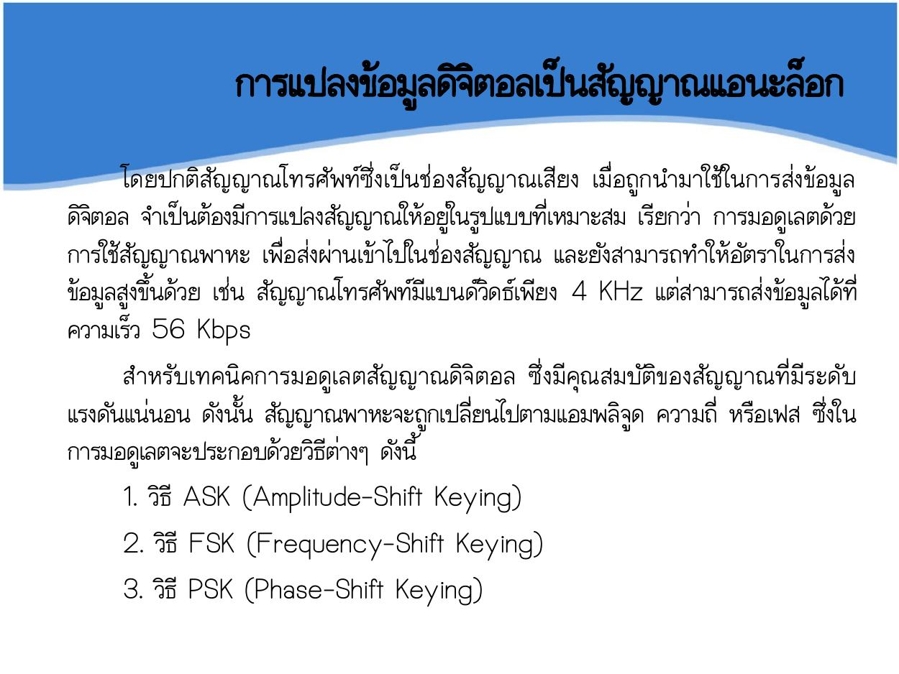
คลิกภาพเพื่อเปิดขยาย
อ่านข้อความต้นฉบับที่สกัดได้ (ไทย/อังกฤษตามไฟล์) การแปลงข้อมูลดิจิตอลเป็นสัญญาณแอนะล็อก
โดยปกติสัญญาณโทรศัพท์ซึ่งเป็นช่องสัญญาณเสียง เมื่อถูกนามาใช้ในการส่งข้อมูล
ดิจิตอล จาเป็นต้องมีการแปลงสัญญาณให้อยู่ในรูปแบบที่เหมาะสม เรียกว่า การมอดูเลตด้วย
การใช้สัญญาณพาหะ เพื่อส่งผ่านเข้าไปในช่องสัญญาณ และยังสามารถทาให้อัตราในการส่ง
ข้อมูลสูงขึ้นด้วย เช่น สัญญาณโทรศัพท์มีแบนด์วิดธ์เพียง 4 KHz แต่สามารถส่งข้อมูลได้ที่
ความเร็ว 56 Kbps
สาหรับ เทคนิ คการมอดูเลตสัญญาณดิจิ ตอล ซึ่ งมีคุณ สมบัติของสัญ ญาณที่ มีระดั บ
แรงดันแน่นอน ดังนั้น สัญญาณพาหะจะถูกเปลี่ยนไปตามแอมพลิจูด ความถี่ หรือเฟส ซึ่งใน
การมอดูเลตจะประกอบด้วยวิธีต่างๆ ดังนี้
1. วิธี ASK (Amplitude-Shift Keying)
2. วิธี FSK (Frequency-Shift Keying)
3. วิธี PSK (Phase-Shift Keying) ทบทวนภาษาไทย: ข้อมูล สัญญาณ และข้อจำกัดของช่องสื่อสาร การส่งข้อมูลดิจิทัลและการแปลงสัญญาณ การส่งแบบแอนะล็อกและ Modulation
กลับสารบัญ ↑ หน้า 28 — การแปลงข้อมูลดิจิตอลเป็นสัญญาณแอนะล็อก ดูภาพต้นฉบับหน้า 28 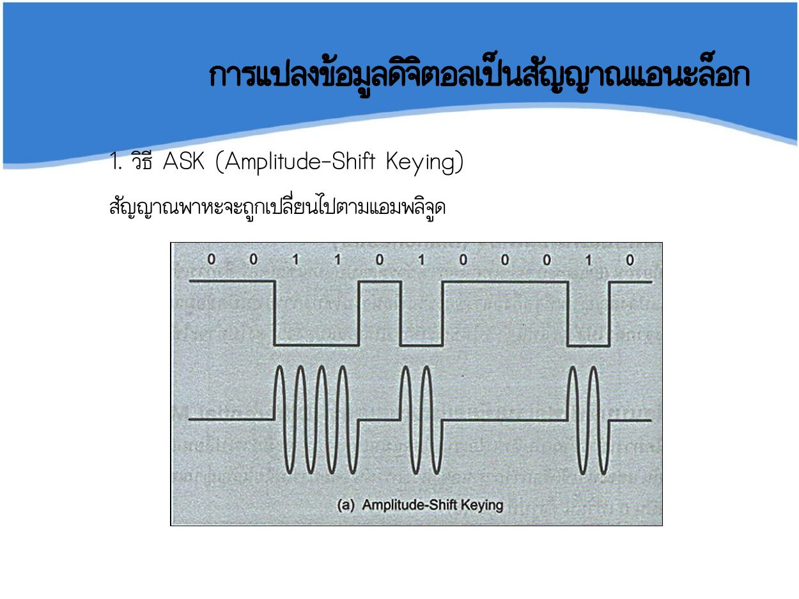
คลิกภาพเพื่อเปิดขยาย
อ่านข้อความต้นฉบับที่สกัดได้ (ไทย/อังกฤษตามไฟล์) การแปลงข้อมูลดิจิตอลเป็นสัญญาณแอนะล็อก
1. วิธี ASK (Amplitude-Shift Keying)
สัญญาณพาหะจะถูกเปลี่ยนไปตามแอมพลิจูด ทบทวนภาษาไทย: ข้อมูล สัญญาณ และข้อจำกัดของช่องสื่อสาร การส่งข้อมูลดิจิทัลและการแปลงสัญญาณ การส่งแบบแอนะล็อกและ Modulation
กลับสารบัญ ↑ หน้า 29 — การแปลงข้อมูลดิจิตอลเป็นสัญญาณแอนะล็อก ดูภาพต้นฉบับหน้า 29 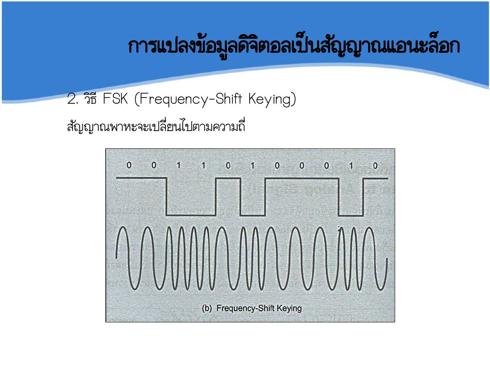
คลิกภาพเพื่อเปิดขยาย
อ่านข้อความต้นฉบับที่สกัดได้ (ไทย/อังกฤษตามไฟล์) การแปลงข้อมูลดิจิตอลเป็นสัญญาณแอนะล็อก
2. วิธี FSK (Frequency-Shift Keying)
สัญญาณพาหะจะเปลี่ยนไปตามความถี่ ทบทวนภาษาไทย: ข้อมูล สัญญาณ และข้อจำกัดของช่องสื่อสาร การส่งข้อมูลดิจิทัลและการแปลงสัญญาณ การส่งแบบแอนะล็อกและ Modulation
กลับสารบัญ ↑ หน้า 30 — การแปลงข้อมูลดิจิตอลเป็นสัญญาณแอนะล็อก ดูภาพต้นฉบับหน้า 30 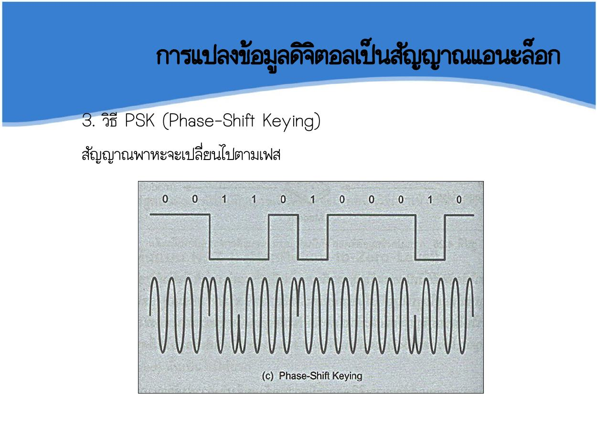
คลิกภาพเพื่อเปิดขยาย
อ่านข้อความต้นฉบับที่สกัดได้ (ไทย/อังกฤษตามไฟล์) การแปลงข้อมูลดิจิตอลเป็นสัญญาณแอนะล็อก
3. วิธี PSK (Phase-Shift Keying)
สัญญาณพาหะจะเปลี่ยนไปตามเฟส ทบทวนภาษาไทย: ข้อมูล สัญญาณ และข้อจำกัดของช่องสื่อสาร การส่งข้อมูลดิจิทัลและการแปลงสัญญาณ การส่งแบบแอนะล็อกและ Modulation
กลับสารบัญ ↑ หน้า 31 — การแปลงข้อมูลแอนะล็อกเป็นสัญญาณดิจติ อล ดูภาพต้นฉบับหน้า 31 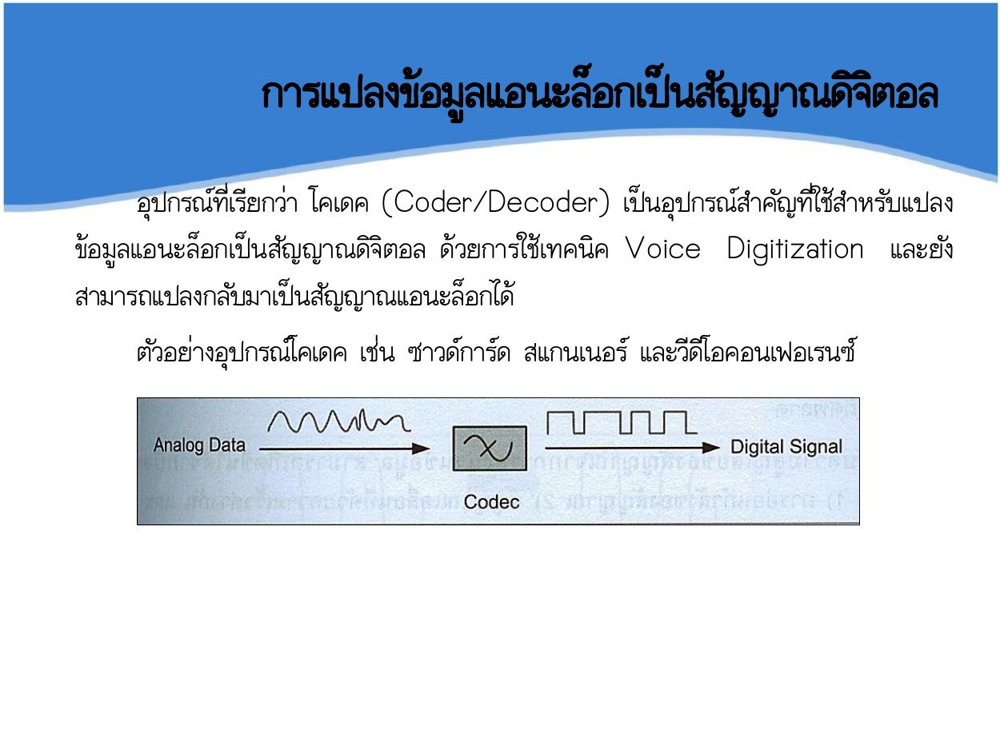
คลิกภาพเพื่อเปิดขยาย
อ่านข้อความต้นฉบับที่สกัดได้ (ไทย/อังกฤษตามไฟล์) การแปลงข้อมูลแอนะล็อกเป็นสัญญาณดิจติ อล
อุปกรณ์ที่เรียกว่า โคเดค (Coder/Decoder) เป็นอุปกรณ์สาคัญที่ใช้สาหรับแปลง
ข้อมูลแอนะล็อกเป็นสัญญาณดิจิตอล ด้วยการใช้เทคนิค Voice Digitization และยัง
สามารถแปลงกลับมาเป็นสัญญาณแอนะล็อกได้
ตัวอย่างอุปกรณ์โคเดค เช่น ซาวด์การ์ด สแกนเนอร์ และวีดีโอคอนเฟอเรนซ์ ทบทวนภาษาไทย: ข้อมูล สัญญาณ และข้อจำกัดของช่องสื่อสาร การส่งข้อมูลดิจิทัลและการแปลงสัญญาณ การส่งแบบแอนะล็อกและ Modulation
กลับสารบัญ ↑ หน้า 32 — รายละเอียดชนิดของข้อมูลทีแ่ ปลงเป็นสัญญาณต่างๆ ดูภาพต้นฉบับหน้า 32 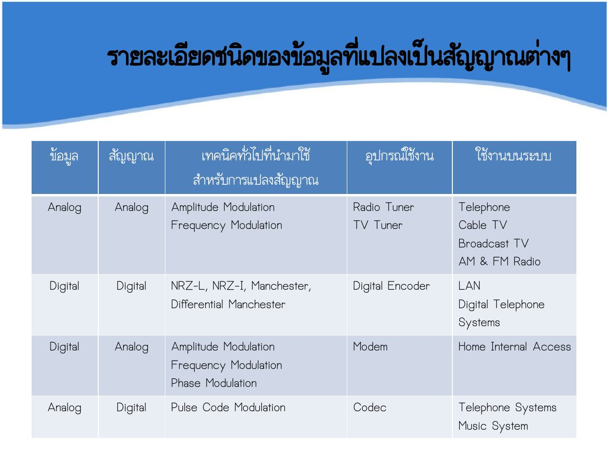
คลิกภาพเพื่อเปิดขยาย
อ่านข้อความต้นฉบับที่สกัดได้ (ไทย/อังกฤษตามไฟล์) รายละเอียดชนิดของข้อมูลทีแ่ ปลงเป็นสัญญาณต่างๆ
ข้อมูล สัญญาณ เทคนิคทั่วไปทีน่ ามาใช้ อุปกรณ์ใช้งาน ใช้งานบนระบบ
สาหรับการแปลงสัญญาณ
Analog Analog Amplitude Modulation Radio Tuner Telephone
Frequency Modulation TV Tuner Cable TV
Broadcast TV
AM & FM Radio
Digital Digital NRZ-L, NRZ-I, Manchester, Digital Encoder LAN
Differential Manchester Digital Telephone
Systems
Digital Analog Amplitude Modulation Modem Home Internal Access
Frequency Modulation
Phase Modulation
Analog Digital Pulse Code Modulation Codec Telephone Systems
Music System ทบทวนภาษาไทย: ข้อมูล สัญญาณ และข้อจำกัดของช่องสื่อสาร การส่งข้อมูลดิจิทัลและการแปลงสัญญาณ การส่งแบบแอนะล็อกและ Modulation
กลับสารบัญ ↑ หน้า 33 — การสูญเสียสัญญาณจากการส่งผ่านข้อมูล ดูภาพต้นฉบับหน้า 33 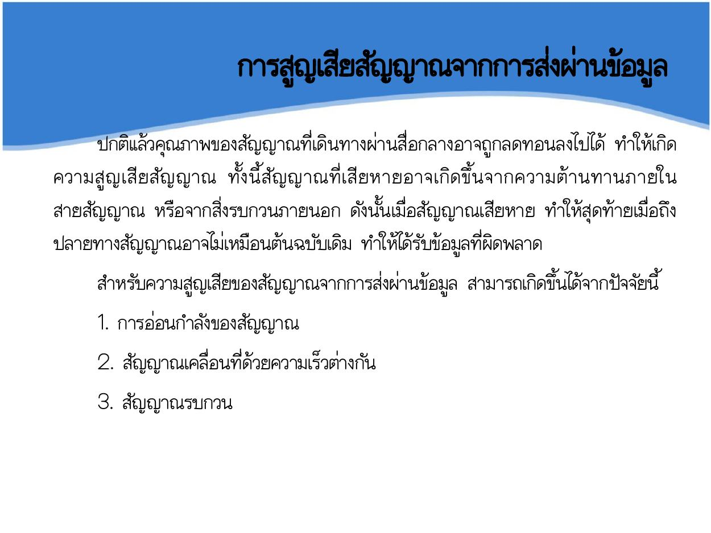
คลิกภาพเพื่อเปิดขยาย
อ่านข้อความต้นฉบับที่สกัดได้ (ไทย/อังกฤษตามไฟล์) การสูญเสียสัญญาณจากการส่งผ่านข้อมูล
ปกติแล้วคุณภาพของสัญญาณที่เดินทางผ่านสื่อกลางอาจถูกลดทอนลงไปได้ ทาให้เกิด
ความสู ญ เสี ย สั ญ ญาณ ทั้ ง นี้ สั ญ ญาณที่ เ สี ย หายอาจเกิ ด ขึ้ น จากความต้ า นทานภายใน
สายสัญญาณ หรือจากสิ่งรบกวนภายนอก ดังนั้นเมื่อสัญญาณเสียหาย ทาให้สุดท้ายเมื่อถึง
ปลายทางสัญญาณอาจไม่เหมือนต้นฉบับเดิม ทาให้ได้รับข้อมูลที่ผิดพลาด
สาหรับความสูญเสียของสัญญาณจากการส่งผ่านข้อมูล สามารถเกิดขึ้นได้จากปัจจัยนี้
1. การอ่อนกาลังของสัญญาณ
2. สัญญาณเคลื่อนที่ด้วยความเร็วต่างกัน
3. สัญญาณรบกวน ทบทวนภาษาไทย: ข้อมูล สัญญาณ และข้อจำกัดของช่องสื่อสาร การส่งข้อมูลดิจิทัลและการแปลงสัญญาณ การส่งแบบแอนะล็อกและ Modulation
กลับสารบัญ ↑ หน้า 34 — การสูญเสียสัญญาณจากการส่งผ่านข้อมูล ดูภาพต้นฉบับหน้า 34 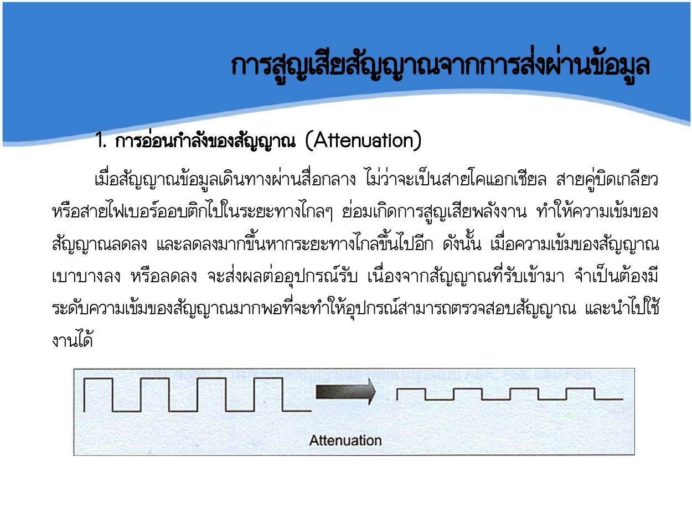
คลิกภาพเพื่อเปิดขยาย
อ่านข้อความต้นฉบับที่สกัดได้ (ไทย/อังกฤษตามไฟล์) การสูญเสียสัญญาณจากการส่งผ่านข้อมูล
1. การอ่อนกาลังของสัญญาณ (Attenuation)
เมื่อสัญญาณข้อมูลเดินทางผ่านสื่อกลาง ไม่ว่าจะเป็นสายโคแอกเชียล สายคู่บิดเกลียว
หรือสายไฟเบอร์ออบติกไปในระยะทางไกลๆ ย่อมเกิดการสูญเสียพลังงาน ทาให้ความเข้มของ
สัญญาณลดลง และลดลงมากขึ้นหากระยะทางไกลขึ้นไปอีก ดังนั้น เมื่อความเข้มของสัญญาณ
เบาบางลง หรือลดลง จะส่งผลต่ออุปกรณ์รับ เนื่องจากสัญญาณที่รับเข้ามา จาเป็นต้องมี
ระดับความเข้มของสัญญาณมากพอที่จะทาให้อุปกรณ์สามารถตรวจสอบสัญญาณ และนาไปใช้
งานได้ ทบทวนภาษาไทย: ข้อมูล สัญญาณ และข้อจำกัดของช่องสื่อสาร การส่งข้อมูลดิจิทัลและการแปลงสัญญาณ การส่งแบบแอนะล็อกและ Modulation
กลับสารบัญ ↑ หน้า 35 — การสูญเสียสัญญาณจากการส่งผ่านข้อมูล ดูภาพต้นฉบับหน้า 35 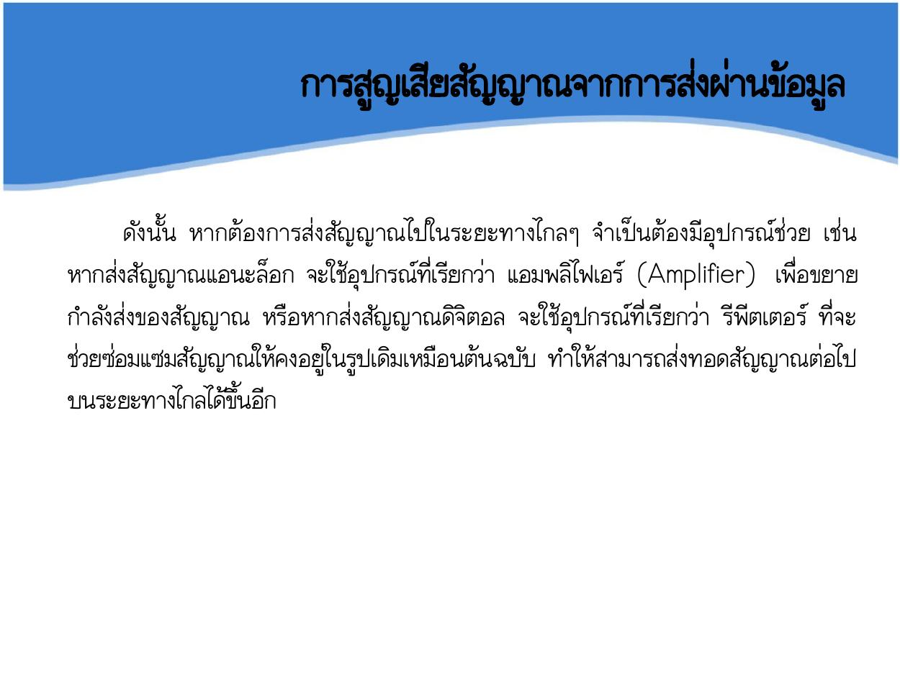
คลิกภาพเพื่อเปิดขยาย
อ่านข้อความต้นฉบับที่สกัดได้ (ไทย/อังกฤษตามไฟล์) การสูญเสียสัญญาณจากการส่งผ่านข้อมูล
ดังนั้น หากต้องการส่งสัญญาณไปในระยะทางไกลๆ จาเป็นต้องมีอุปกรณ์ช่วย เช่น
หากส่งสัญญาณแอนะล็อก จะใช้อุปกรณ์ที่เรียกว่า แอมพลิไฟเอร์ (Amplifier) เพื่อขยาย
กาลังส่งของสัญญาณ หรือหากส่งสัญญาณดิจิตอล จะใช้อุปกรณ์ที่เรียกว่า รีพีตเตอร์ ที่จะ
ช่วยซ่อมแซมสัญญาณให้คงอยู่ในรูปเดิมเหมือนต้นฉบับ ทาให้สามารถส่งทอดสัญญาณต่อไป
บนระยะทางไกลได้ขึ้นอีก ทบทวนภาษาไทย: ข้อมูล สัญญาณ และข้อจำกัดของช่องสื่อสาร การส่งข้อมูลดิจิทัลและการแปลงสัญญาณ การส่งแบบแอนะล็อกและ Modulation
กลับสารบัญ ↑ หน้า 36 — การสูญเสียสัญญาณจากการส่งผ่านข้อมูล ดูภาพต้นฉบับหน้า 36 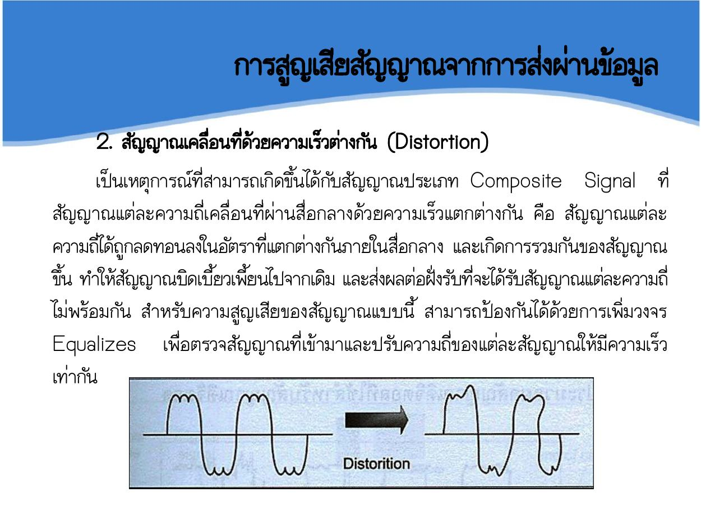
คลิกภาพเพื่อเปิดขยาย
อ่านข้อความต้นฉบับที่สกัดได้ (ไทย/อังกฤษตามไฟล์) การสูญเสียสัญญาณจากการส่งผ่านข้อมูล
2. สัญญาณเคลื่อนที่ด้วยความเร็วต่างกัน (Distortion)
เป็นเหตุการณ์ที่สามารถเกิดขึ้นได้กับสัญญาณประเภท Composite Signal ที่
สัญญาณแต่ละความถี่เคลื่อนที่ผ่านสื่อกลางด้วยความเร็วแตกต่างกัน คือ สัญญาณแต่ละ
ความถี่ได้ถูกลดทอนลงในอัตราที่แตกต่างกันภายในสื่อกลาง และเกิดการรวมกันของสัญญาณ
ขึ้น ทาให้สัญญาณบิดเบี้ยวเพี้ยนไปจากเดิม และส่งผลต่อฝั่งรับที่จะได้รับสัญญาณแต่ละความถี่
ไม่พร้อมกัน สาหรับความสูญเสียของสัญญาณแบบนี้ สามารถป้องกันได้ด้วยการเพิ่มวงจร
Equalizes เพื่อตรวจสัญญาณที่เข้ามาและปรับความถี่ของแต่ละสัญญาณให้มีความเร็ว
เท่ากัน ทบทวนภาษาไทย: ข้อมูล สัญญาณ และข้อจำกัดของช่องสื่อสาร การส่งข้อมูลดิจิทัลและการแปลงสัญญาณ การส่งแบบแอนะล็อกและ Modulation
กลับสารบัญ ↑ หน้า 37 — สัญญาณรบกวน ดูภาพต้นฉบับหน้า 37 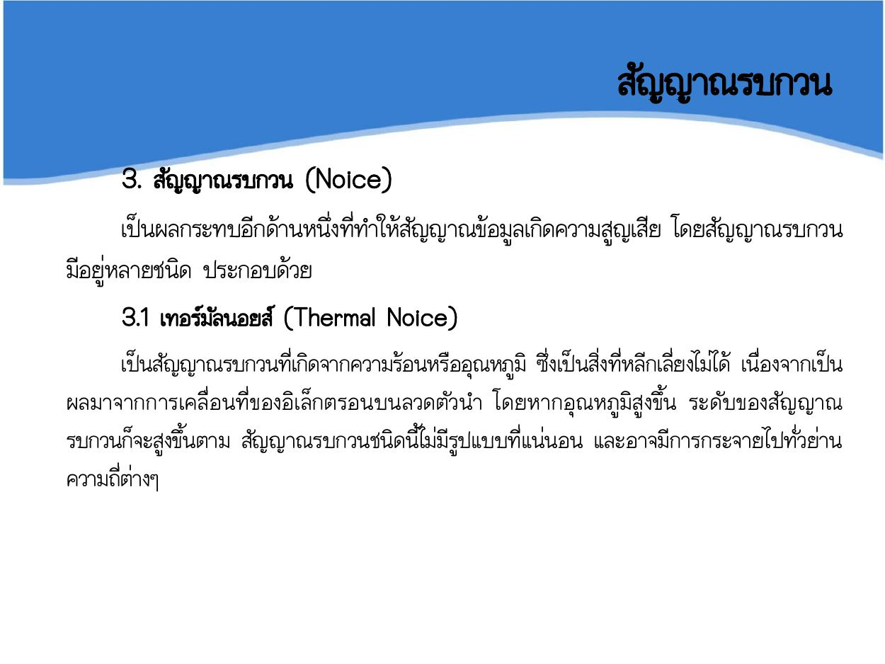
คลิกภาพเพื่อเปิดขยาย
อ่านข้อความต้นฉบับที่สกัดได้ (ไทย/อังกฤษตามไฟล์) สัญญาณรบกวน
3. สัญญาณรบกวน (Noice)
เป็นผลกระทบอีกด้านหนึ่งที่ทาให้สัญญาณข้อมูลเกิดความสูญเสีย โดยสัญญาณรบกวน
มีอยู่หลายชนิด ประกอบด้วย
3.1 เทอร์มัลนอยส์ (Thermal Noice)
เป็นสัญญาณรบกวนที่เกิดจากความร้อนหรืออุณหภูมิ ซึ่งเป็นสิ่งที่หลีกเลี่ยงไม่ได้ เนื่องจากเป็น
ผลมาจากการเคลื่อนที่ของอิเล็กตรอนบนลวดตัวนา โดยหากอุณหภูมิสูงขึ้น ระดับ ของสัญญาณ
รบกวนก็จะสูงขึ้นตาม สัญญาณรบกวนชนิดนี้ไม่มีรูปแบบที่แน่นอน และอาจมีการกระจายไปทั่วย่าน
ความถี่ต่างๆ ทบทวนภาษาไทย: ข้อมูล สัญญาณ และข้อจำกัดของช่องสื่อสาร การส่งข้อมูลดิจิทัลและการแปลงสัญญาณ การส่งแบบแอนะล็อกและ Modulation
กลับสารบัญ ↑ หน้า 38 — สัญญาณรบกวน ดูภาพต้นฉบับหน้า 38 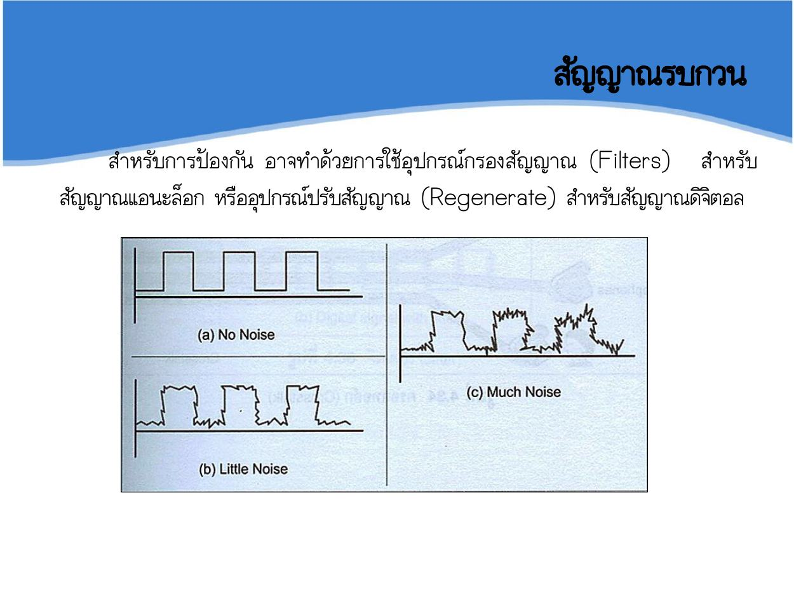
คลิกภาพเพื่อเปิดขยาย
อ่านข้อความต้นฉบับที่สกัดได้ (ไทย/อังกฤษตามไฟล์) สัญญาณรบกวน
สาหรับการป้องกัน อาจทาด้วยการใช้อุปกรณ์กรองสัญญาณ (Filters) สาหรับ
สัญญาณแอนะล็อก หรืออุปกรณ์ปรับสัญญาณ (Regenerate) สาหรับสัญญาณดิจิตอล ทบทวนภาษาไทย: ข้อมูล สัญญาณ และข้อจำกัดของช่องสื่อสาร การส่งข้อมูลดิจิทัลและการแปลงสัญญาณ การส่งแบบแอนะล็อกและ Modulation
กลับสารบัญ ↑ หน้า 39 — สัญญาณรบกวน ดูภาพต้นฉบับหน้า 39 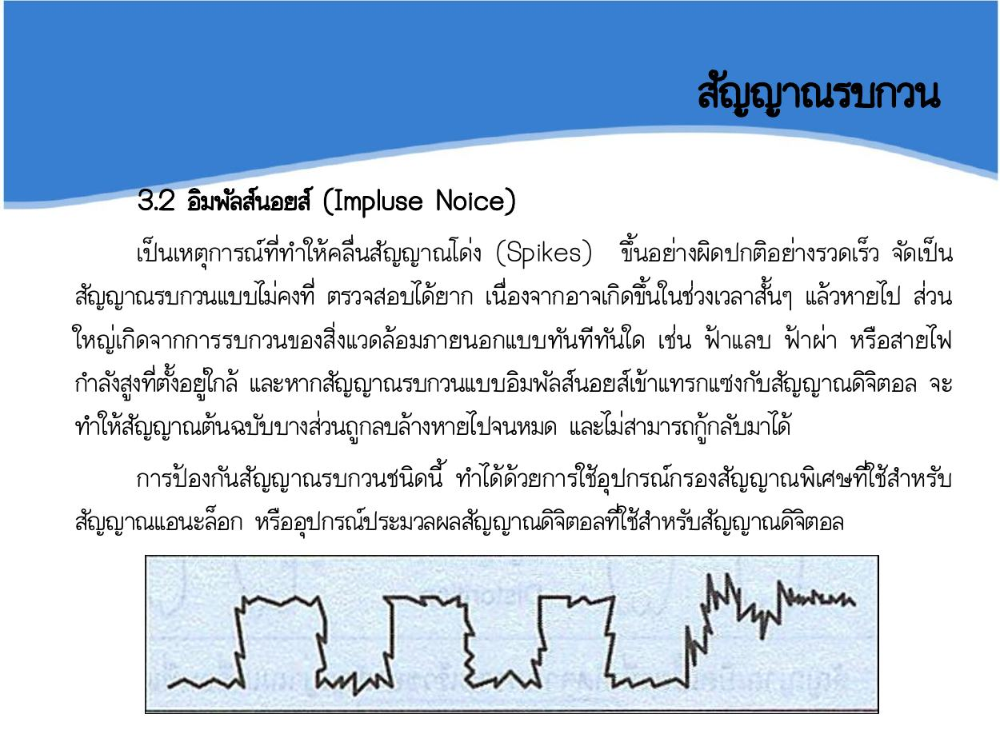
คลิกภาพเพื่อเปิดขยาย
อ่านข้อความต้นฉบับที่สกัดได้ (ไทย/อังกฤษตามไฟล์) สัญญาณรบกวน
3.2 อิมพัลส์นอยส์ (Impluse Noice)
เป็นเหตุการณ์ที่ทาให้คลื่นสัญญาณโด่ง (Spikes) ขึ้นอย่างผิดปกติอย่างรวดเร็ว จัดเป็น
สัญญาณรบกวนแบบไม่คงที่ ตรวจสอบได้ยาก เนื่องจากอาจเกิดขึ้นในช่วงเวลาสั้นๆ แล้วหายไป ส่วน
ใหญ่เกิดจากการรบกวนของสิ่งแวดล้อมภายนอกแบบทันทีทันใด เช่น ฟ้าแลบ ฟ้าผ่า หรือสายไฟ
กาลังสูงที่ตั้งอยู่ใกล้ และหากสัญญาณรบกวนแบบอิมพัลส์นอยส์เข้าแทรกแซงกับสัญญาณดิจิตอล จะ
ทาให้สัญญาณต้นฉบับบางส่วนถูกลบล้างหายไปจนหมด และไม่สามารถกู้กลับมาได้
การป้องกันสัญญาณรบกวนชนิดนี้ ทาได้ด้วยการใช้อุปกรณ์กรองสัญญาณพิเศษที่ใช้สาหรับ
สัญญาณแอนะล็อก หรืออุปกรณ์ประมวลผลสัญญาณดิจิตอลที่ใช้สาหรับสัญญาณดิจิตอล ทบทวนภาษาไทย: ข้อมูล สัญญาณ และข้อจำกัดของช่องสื่อสาร การส่งข้อมูลดิจิทัลและการแปลงสัญญาณ การส่งแบบแอนะล็อกและ Modulation
กลับสารบัญ ↑ หน้า 40 — สัญญาณรบกวน ดูภาพต้นฉบับหน้า 40 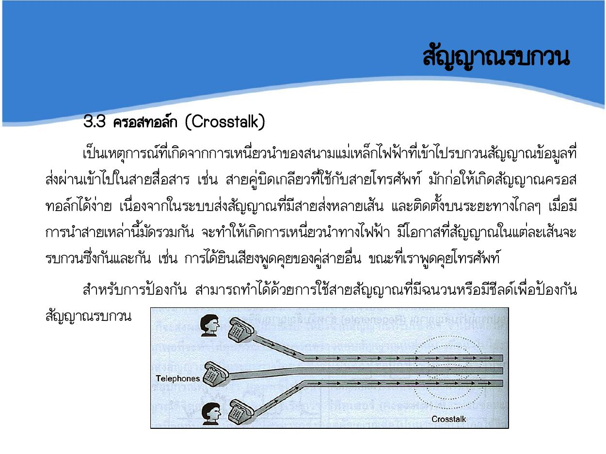
คลิกภาพเพื่อเปิดขยาย
อ่านข้อความต้นฉบับที่สกัดได้ (ไทย/อังกฤษตามไฟล์) สัญญาณรบกวน
3.3 ครอสทอล์ก (Crosstalk)
เป็นเหตุการณ์ที่เกิดจากการเหนี่ยวนาของสนามแม่เหล็กไฟฟ้าที่เข้าไปรบกวนสัญญาณข้อมูลที่
ส่งผ่านเข้าไปในสายสื่อสาร เช่น สายคู่บิดเกลียวที่ใช้กับสายโทรศัพท์ มักก่อให้เกิดสัญญาณครอส
ทอล์กได้ง่าย เนื่องจากในระบบส่งสัญญาณที่มีสายส่งหลายเส้น และติดตั้งบนระยะทางไกลๆ เมื่อมี
การนาสายเหล่านี้มัดรวมกัน จะทาให้เกิดการเหนี่ยวนาทางไฟฟ้า มีโอกาสที่สัญญาณในแต่ละเส้นจะ
รบกวนซึ่งกันและกัน เช่น การได้ยินเสียงพูดคุยของคู่สายอื่น ขณะที่เราพูดคุยโทรศัพท์
สาหรับการป้องกัน สามารถทาได้ด้วยการใช้สายสัญญาณที่มีฉนวนหรือมีชีลด์เพื่อป้องกัน
สัญญาณรบกวน ทบทวนภาษาไทย: ข้อมูล สัญญาณ และข้อจำกัดของช่องสื่อสาร การส่งข้อมูลดิจิทัลและการแปลงสัญญาณ การส่งแบบแอนะล็อกและ Modulation
กลับสารบัญ ↑ หน้า 41 — สัญญาณรบกวน ดูภาพต้นฉบับหน้า 41 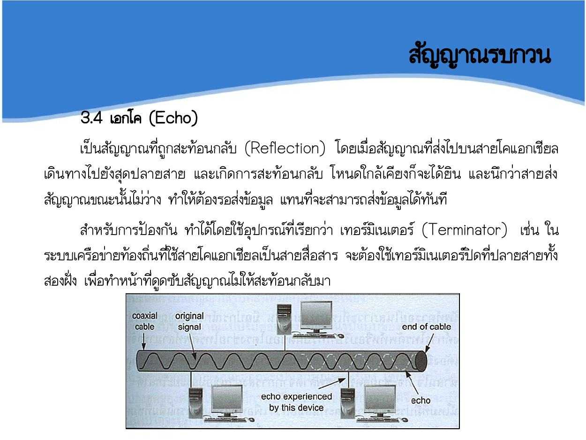
คลิกภาพเพื่อเปิดขยาย
อ่านข้อความต้นฉบับที่สกัดได้ (ไทย/อังกฤษตามไฟล์) สัญญาณรบกวน
3.4 เอกโค (Echo)
เป็นสัญญาณที่ถูกสะท้อนกลับ (Reflection) โดยเมื่อสัญญาณที่ส่งไปบนสายโคแอกเชียล
เดินทางไปยังสุดปลายสาย และเกิดการสะท้อนกลับ โหนดใกล้เคียงก็จะได้ยิน และนึกว่าสายส่ง
สัญญาณขณะนั้นไม่ว่าง ทาให้ต้องรอส่งข้อมูล แทนที่จะสามารถส่งข้อมูลได้ทันที
สาหรับการป้องกัน ทาได้โดยใช้อุปกรณ์ที่เรียกว่า เทอร์มิเนเตอร์ (Terminator) เช่น ใน
ระบบเครือข่ายท้องถิ่นที่ใช้สายโคแอกเชียลเป็นสายสื่อสาร จะต้องใช้เทอร์มิเนเตอร์ปิดที่ปลายสายทั้ง
สองฝั่ง เพื่อทาหน้าที่ดูดซับสัญญาณไม่ให้สะท้อนกลับมา ทบทวนภาษาไทย: ข้อมูล สัญญาณ และข้อจำกัดของช่องสื่อสาร การส่งข้อมูลดิจิทัลและการแปลงสัญญาณ การส่งแบบแอนะล็อกและ Modulation
กลับสารบัญ ↑ หน้า 42 — สัญญาณรบกวน ดูภาพต้นฉบับหน้า 42 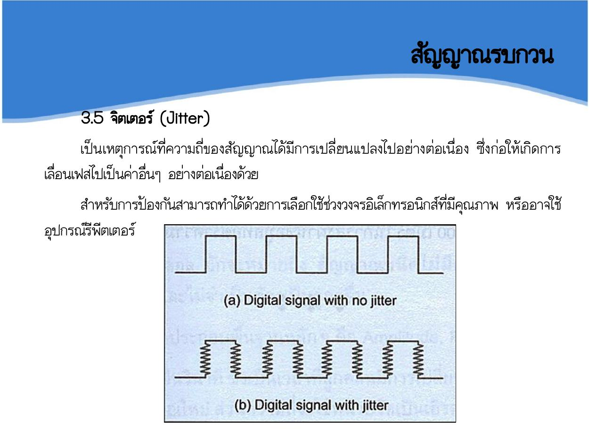
คลิกภาพเพื่อเปิดขยาย
อ่านข้อความต้นฉบับที่สกัดได้ (ไทย/อังกฤษตามไฟล์) สัญญาณรบกวน
3.5 จิตเตอร์ (Jitter)
เป็นเหตุการณ์ที่ความถี่ของสัญญาณได้มีการเปลี่ยนแปลงไปอย่างต่อเนื่อง ซึ่งก่อให้เกิดการ
เลื่อนเฟสไปเป็นค่าอื่นๆ อย่างต่อเนื่องด้วย
สาหรับการป้องกันสามารถทาได้ด้วยการเลือกใช้ช่วงวงจรอิเล็กทรอนิกส์ที่มีคุณภาพ หรืออาจใช้
อุปกรณ์รีพีตเตอร์ ทบทวนภาษาไทย: ข้อมูล สัญญาณ และข้อจำกัดของช่องสื่อสาร การส่งข้อมูลดิจิทัลและการแปลงสัญญาณ การส่งแบบแอนะล็อกและ Modulation
กลับสารบัญ ↑ หน้า 43 — การป้องกันสัญญาณรบกวน ดูภาพต้นฉบับหน้า 43 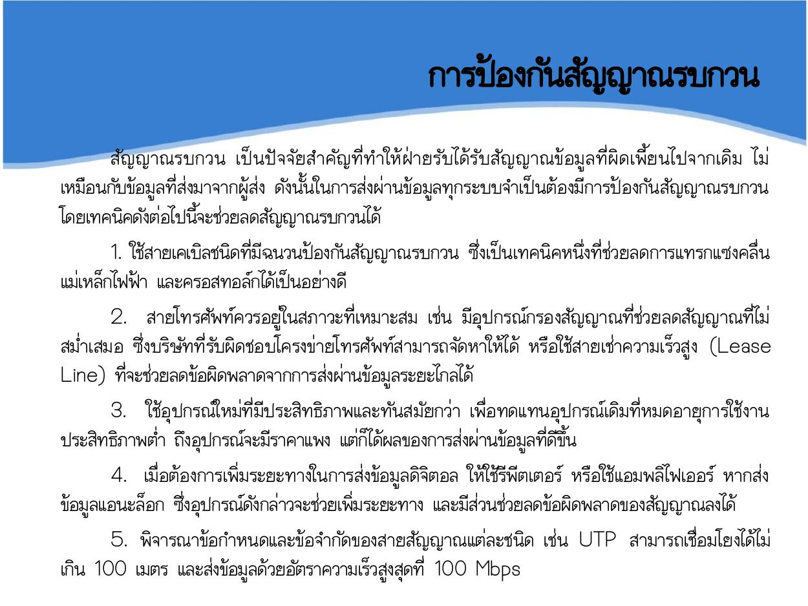
คลิกภาพเพื่อเปิดขยาย
อ่านข้อความต้นฉบับที่สกัดได้ (ไทย/อังกฤษตามไฟล์) การป้องกันสัญญาณรบกวน
สั ญญาณรบกวน เป็น ปั จ จัย ส าคั ญที่ ท าให้ ฝ่ายรับได้ รับ สั ญญาณข้ อ มูล ที่ ผิ ด เพี้ย นไปจากเดิ ม ไม่
เหมือนกับข้อมูลที่ส่งมาจากผู้ส่ง ดังนั้นในการส่งผ่านข้อมูลทุกระบบจาเป็นต้องมีการป้องกันสัญญาณรบกวน
โดยเทคนิคดังต่อไปนี้จะช่วยลดสัญญาณรบกวนได้
1. ใช้สายเคเบิลชนิดที่มีฉนวนป้องกันสัญญาณรบกวน ซึ่งเป็นเทคนิคหนึ่งที่ช่วยลดการแทรกแซงคลื่น
แม่เหล็กไฟฟ้า และครอสทอล์กได้เป็นอย่างดี
2. สายโทรศัพท์ควรอยู่ในสภาวะที่เหมาะสม เช่น มีอุปกรณ์กรองสัญญาณที่ช่วยลดสัญญาณที่ไม่
สม่าเสมอ ซึ่งบริษัทที่รับผิดชอบโครงข่ายโทรศัพท์สามารถจัดหาให้ได้ หรือใช้สายเช่าความเร็วสูง (Lease
Line) ที่จะช่วยลดข้อผิดพลาดจากการส่งผ่านข้อมูลระยะไกลได้
3. ใช้อุปกรณ์ใหม่ที่มีประสิทธิภาพและทันสมัยกว่า เพื่อทดแทนอุปกรณ์เดิมที่หมดอายุการใช้งาน
ประสิทธิภาพต่า ถึงอุปกรณ์จะมีราคาแพง แต่ก็ได้ผลของการส่งผ่านข้อมูลที่ดีขึ้น
4. เมื่อต้องการเพิ่มระยะทางในการส่งข้อมูลดิจิตอล ให้ใช้รีพีตเตอร์ หรือใช้แอมพลิไฟเออร์ หากส่ง
ข้อมูลแอนะล็อก ซึ่งอุปกรณ์ดังกล่าวจะช่วยเพิ่มระยะทาง และมีส่วนช่วยลดข้อผิดพลาดของสัญญาณลงได้
5. พิจารณาข้อกาหนดและข้อจากัดของสายสัญญาณแต่ละชนิด เช่น UTP สามารถเชื่อมโยงได้ไม่
เกิน 100 เมตร และส่งข้อมูลด้วยอัตราความเร็วสูงสุดที่ 100 Mbps ทบทวนภาษาไทย: ข้อมูล สัญญาณ และข้อจำกัดของช่องสื่อสาร การส่งข้อมูลดิจิทัลและการแปลงสัญญาณ การส่งแบบแอนะล็อกและ Modulation
กลับสารบัญ ↑